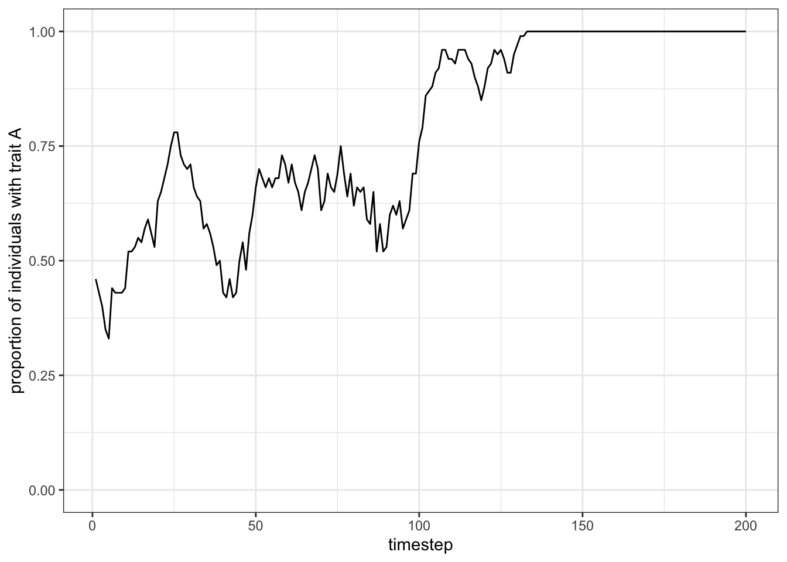
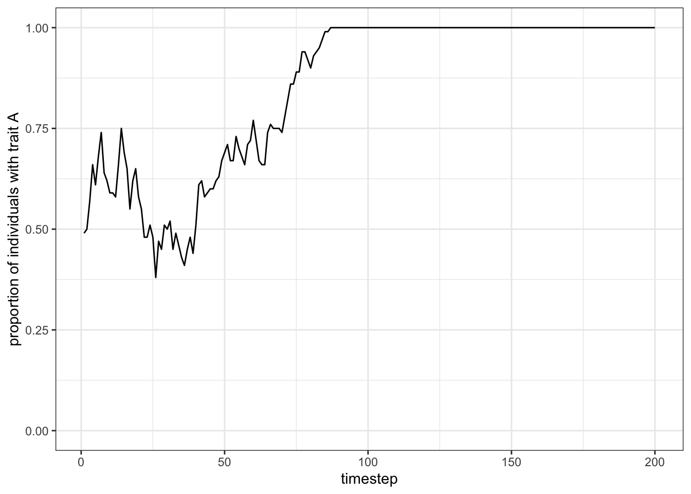
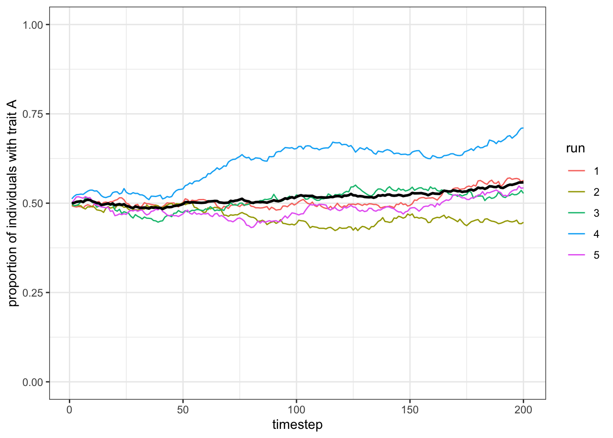
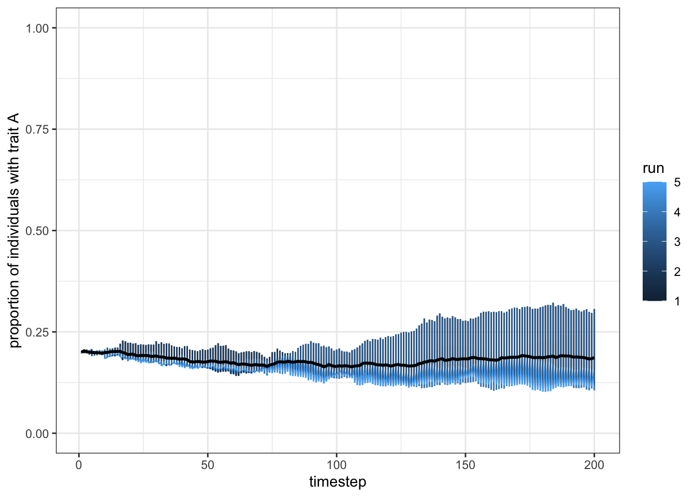

<!DOCTYPE html>
<html lang="" xml:lang="">
<head>

  <meta charset="utf-8" />
  <meta http-equiv="X-UA-Compatible" content="IE=edge" />
  <title>Chapter 2 バイアスなしの伝達 Unbiased transmission | 文化進化のインディヴィジュアルベーストモデル</title>
  <meta name="description" content="Chapter 2 バイアスなしの伝達 Unbiased transmission | 文化進化のインディヴィジュアルベーストモデル" />
  <meta name="generator" content="bookdown 0.22 and GitBook 2.6.7" />

  <meta property="og:title" content="Chapter 2 バイアスなしの伝達 Unbiased transmission | 文化進化のインディヴィジュアルベーストモデル" />
  <meta property="og:type" content="book" />
  
  
  
  

  <meta name="twitter:card" content="summary" />
  <meta name="twitter:title" content="Chapter 2 バイアスなしの伝達 Unbiased transmission | 文化進化のインディヴィジュアルベーストモデル" />
  
  
  

<meta name="author" content="Alberto Acerbi" />
<meta name="author" content="Alex Mesoudi" />
<meta name="author" content="Marco Smolla" />


<meta name="date" content="2021-05-21" />

  <meta name="viewport" content="width=device-width, initial-scale=1" />
  <meta name="apple-mobile-web-app-capable" content="yes" />
  <meta name="apple-mobile-web-app-status-bar-style" content="black" />
  
  
<link rel="prev" href="ライブラリの読み込み.html"/>
<link rel="next" href="unbiased-and-biased-mutation.html"/>
<script src="libs/header-attrs-2.8/header-attrs.js"></script>
<script src="libs/jquery-2.2.3/jquery.min.js"></script>
<link href="libs/gitbook-2.6.7/css/style.css" rel="stylesheet" />
<link href="libs/gitbook-2.6.7/css/plugin-table.css" rel="stylesheet" />
<link href="libs/gitbook-2.6.7/css/plugin-bookdown.css" rel="stylesheet" />
<link href="libs/gitbook-2.6.7/css/plugin-highlight.css" rel="stylesheet" />
<link href="libs/gitbook-2.6.7/css/plugin-search.css" rel="stylesheet" />
<link href="libs/gitbook-2.6.7/css/plugin-fontsettings.css" rel="stylesheet" />
<link href="libs/gitbook-2.6.7/css/plugin-clipboard.css" rel="stylesheet" />


<link href="libs/anchor-sections-1.0.1/anchor-sections.css" rel="stylesheet" />
<script src="libs/anchor-sections-1.0.1/anchor-sections.js"></script>


<style type="text/css">
pre > code.sourceCode { white-space: pre; position: relative; }
pre > code.sourceCode > span { display: inline-block; line-height: 1.25; }
pre > code.sourceCode > span:empty { height: 1.2em; }
.sourceCode { overflow: visible; }
code.sourceCode > span { color: inherit; text-decoration: inherit; }
pre.sourceCode { margin: 0; }
@media screen {
div.sourceCode { overflow: auto; }
}
@media print {
pre > code.sourceCode { white-space: pre-wrap; }
pre > code.sourceCode > span { text-indent: -5em; padding-left: 5em; }
}
pre.numberSource code
  { counter-reset: source-line 0; }
pre.numberSource code > span
  { position: relative; left: -4em; counter-increment: source-line; }
pre.numberSource code > span > a:first-child::before
  { content: counter(source-line);
    position: relative; left: -1em; text-align: right; vertical-align: baseline;
    border: none; display: inline-block;
    -webkit-touch-callout: none; -webkit-user-select: none;
    -khtml-user-select: none; -moz-user-select: none;
    -ms-user-select: none; user-select: none;
    padding: 0 4px; width: 4em;
    color: #aaaaaa;
  }
pre.numberSource { margin-left: 3em; border-left: 1px solid #aaaaaa;  padding-left: 4px; }
div.sourceCode
  {   }
@media screen {
pre > code.sourceCode > span > a:first-child::before { text-decoration: underline; }
}
code span.al { color: #ff0000; font-weight: bold; } /* Alert */
code span.an { color: #60a0b0; font-weight: bold; font-style: italic; } /* Annotation */
code span.at { color: #7d9029; } /* Attribute */
code span.bn { color: #40a070; } /* BaseN */
code span.bu { } /* BuiltIn */
code span.cf { color: #007020; font-weight: bold; } /* ControlFlow */
code span.ch { color: #4070a0; } /* Char */
code span.cn { color: #880000; } /* Constant */
code span.co { color: #60a0b0; font-style: italic; } /* Comment */
code span.cv { color: #60a0b0; font-weight: bold; font-style: italic; } /* CommentVar */
code span.do { color: #ba2121; font-style: italic; } /* Documentation */
code span.dt { color: #902000; } /* DataType */
code span.dv { color: #40a070; } /* DecVal */
code span.er { color: #ff0000; font-weight: bold; } /* Error */
code span.ex { } /* Extension */
code span.fl { color: #40a070; } /* Float */
code span.fu { color: #06287e; } /* Function */
code span.im { } /* Import */
code span.in { color: #60a0b0; font-weight: bold; font-style: italic; } /* Information */
code span.kw { color: #007020; font-weight: bold; } /* Keyword */
code span.op { color: #666666; } /* Operator */
code span.ot { color: #007020; } /* Other */
code span.pp { color: #bc7a00; } /* Preprocessor */
code span.sc { color: #4070a0; } /* SpecialChar */
code span.ss { color: #bb6688; } /* SpecialString */
code span.st { color: #4070a0; } /* String */
code span.va { color: #19177c; } /* Variable */
code span.vs { color: #4070a0; } /* VerbatimString */
code span.wa { color: #60a0b0; font-weight: bold; font-style: italic; } /* Warning */
</style>

<style type="text/css">
/* Used with Pandoc 2.11+ new --citeproc when CSL is used */
div.csl-bib-body { }
div.csl-entry {
  clear: both;
}
.hanging div.csl-entry {
  margin-left:2em;
  text-indent:-2em;
}
div.csl-left-margin {
  min-width:2em;
  float:left;
}
div.csl-right-inline {
  margin-left:2em;
  padding-left:1em;
}
div.csl-indent {
  margin-left: 2em;
}
</style>

<link rel="stylesheet" href="style.css" type="text/css" />
</head>

<body>


  <div class="book without-animation with-summary font-size-2 font-family-1" data-basepath=".">

    <div class="book-summary">
      <nav role="navigation">

<ul class="summary">
<li><a href="./">Individual-based models of cultural evolution</a></li>

<li class="divider"></li>
<li class="chapter" data-level="" data-path="index.html"><a href="index.html"><i class="fa fa-check"></i>Note to the reader</a>
<ul>
<li class="chapter" data-level="0.1" data-path="index.html"><a href="index.html#原書との違い"><i class="fa fa-check"></i><b>0.1</b> 原書との違い</a></li>
<li class="chapter" data-level="0.2" data-path="index.html"><a href="index.html#訳語対応表"><i class="fa fa-check"></i><b>0.2</b> 訳語対応表</a></li>
<li class="chapter" data-level="0.3" data-path="index.html"><a href="index.html#誤訳対応"><i class="fa fa-check"></i><b>0.3</b> 誤訳対応</a></li>
<li class="chapter" data-level="" data-path="index.html"><a href="index.html#本書のねらい"><i class="fa fa-check"></i>本書のねらい</a></li>
<li class="chapter" data-level="" data-path="index.html"><a href="index.html#文化進化とはなにか"><i class="fa fa-check"></i>文化進化とはなにか</a></li>
<li class="chapter" data-level="" data-path="index.html"><a href="index.html#なぜモデリングするのか"><i class="fa fa-check"></i>なぜモデリングするのか</a></li>
<li class="chapter" data-level="" data-path="index.html"><a href="index.html#why-individual-based-models"><i class="fa fa-check"></i>Why individual-based models?</a></li>
<li class="chapter" data-level="0.4" data-path="index.html"><a href="index.html#なぜインディヴィジュアルベーストモデルか"><i class="fa fa-check"></i><b>0.4</b> なぜインディヴィジュアルベーストモデルか</a></li>
<li class="chapter" data-level="" data-path="index.html"><a href="index.html#how-to-use-this-book---the-programming"><i class="fa fa-check"></i>How to use this book - the programming</a></li>
<li class="chapter" data-level="0.5" data-path="index.html"><a href="index.html#本書のつかいかたプログラミング"><i class="fa fa-check"></i><b>0.5</b> 本書のつかいかた：プログラミング</a></li>
<li class="chapter" data-level="" data-path="index.html"><a href="index.html#how-to-use-this-book---the-simulations"><i class="fa fa-check"></i>How to use this book - the simulations</a></li>
<li class="chapter" data-level="0.6" data-path="index.html"><a href="index.html#本書のつかいかたシミュレーション"><i class="fa fa-check"></i><b>0.6</b> 本書のつかいかた：シミュレーション</a></li>
<li class="chapter" data-level="" data-path="index.html"><a href="index.html#conventions-and-formatting"><i class="fa fa-check"></i>Conventions and formatting</a></li>
<li class="chapter" data-level="0.7" data-path="index.html"><a href="index.html#コーディングの慣習やスタイル"><i class="fa fa-check"></i><b>0.7</b> コーディングの慣習やスタイル</a></li>
<li class="chapter" data-level="" data-path="index.html"><a href="index.html#further-reading"><i class="fa fa-check"></i>Further reading</a></li>
<li class="chapter" data-level="" data-path="index.html"><a href="index.html#より詳しく学びたいひとへ"><i class="fa fa-check"></i>より詳しく学びたいひとへ</a></li>
</ul></li>
<li class="part"><span><b>基礎</b></span></li>
<li class="chapter" data-level="1" data-path="ライブラリの読み込み.html"><a href="ライブラリの読み込み.html"><i class="fa fa-check"></i><b>1</b> ライブラリの読み込み</a></li>
<li class="chapter" data-level="2" data-path="バイアスなしの伝達-unbiased-transmission.html"><a href="バイアスなしの伝達-unbiased-transmission.html"><i class="fa fa-check"></i><b>2</b> バイアスなしの伝達 Unbiased transmission</a>
<ul>
<li class="chapter" data-level="2.1" data-path="バイアスなしの伝達-unbiased-transmission.html"><a href="バイアスなしの伝達-unbiased-transmission.html#シミュレーションの初期化-initialising-the-simulation"><i class="fa fa-check"></i><b>2.1</b> シミュレーションの初期化 Initialising the simulation</a></li>
<li class="chapter" data-level="2.2" data-path="バイアスなしの伝達-unbiased-transmission.html"><a href="バイアスなしの伝達-unbiased-transmission.html#execute-generation-turn-over-many-times"><i class="fa fa-check"></i><b>2.2</b> Execute generation turn-over many times</a></li>
<li class="chapter" data-level="2.3" data-path="バイアスなしの伝達-unbiased-transmission.html"><a href="バイアスなしの伝達-unbiased-transmission.html#モデルの結果をプロットするplotting-the-model-results"><i class="fa fa-check"></i><b>2.3</b> モデルの結果をプロットするPlotting the model results</a></li>
<li class="chapter" data-level="2.4" data-path="バイアスなしの伝達-unbiased-transmission.html"><a href="バイアスなしの伝達-unbiased-transmission.html#モデルのコードをラップする関数を書く-write-a-function-to-wrap-the-model-code"><i class="fa fa-check"></i><b>2.4</b> モデルのコードをラップする関数を書く　Write a function to wrap the model code</a></li>
<li class="chapter" data-level="2.5" data-path="バイアスなしの伝達-unbiased-transmission.html"><a href="バイアスなしの伝達-unbiased-transmission.html#run-several-independent-simulations-and-plot-their-results"><i class="fa fa-check"></i><b>2.5</b> Run several independent simulations and plot their results</a></li>
<li class="chapter" data-level="2.6" data-path="バイアスなしの伝達-unbiased-transmission.html"><a href="バイアスなしの伝達-unbiased-transmission.html#初期状態を変えるvarying-initial-conditions"><i class="fa fa-check"></i><b>2.6</b> 初期状態を変えるVarying initial conditions</a></li>
<li class="chapter" data-level="2.7" data-path="バイアスなしの伝達-unbiased-transmission.html"><a href="バイアスなしの伝達-unbiased-transmission.html#モデルのまとめsummary-of-the-model"><i class="fa fa-check"></i><b>2.7</b> モデルのまとめSummary of the model</a></li>
<li class="chapter" data-level="2.8" data-path="バイアスなしの伝達-unbiased-transmission.html"><a href="バイアスなしの伝達-unbiased-transmission.html#further-reading-1"><i class="fa fa-check"></i><b>2.8</b> Further reading</a></li>
</ul></li>
<li class="chapter" data-level="3" data-path="unbiased-and-biased-mutation.html"><a href="unbiased-and-biased-mutation.html"><i class="fa fa-check"></i><b>3</b> Unbiased and biased mutation</a>
<ul>
<li class="chapter" data-level="3.1" data-path="unbiased-and-biased-mutation.html"><a href="unbiased-and-biased-mutation.html#unbiased-mutation"><i class="fa fa-check"></i><b>3.1</b> Unbiased mutation</a></li>
<li class="chapter" data-level="3.2" data-path="unbiased-and-biased-mutation.html"><a href="unbiased-and-biased-mutation.html#biased-mutation"><i class="fa fa-check"></i><b>3.2</b> Biased mutation</a></li>
<li class="chapter" data-level="3.3" data-path="unbiased-and-biased-mutation.html"><a href="unbiased-and-biased-mutation.html#summary-of-the-model"><i class="fa fa-check"></i><b>3.3</b> Summary of the model</a></li>
<li class="chapter" data-level="3.4" data-path="unbiased-and-biased-mutation.html"><a href="unbiased-and-biased-mutation.html#further-reading-2"><i class="fa fa-check"></i><b>3.4</b> Further reading</a></li>
</ul></li>
<li class="chapter" data-level="4" data-path="biased-transmission-direct-bias.html"><a href="biased-transmission-direct-bias.html"><i class="fa fa-check"></i><b>4</b> Biased transmission: direct bias</a>
<ul>
<li class="chapter" data-level="4.1" data-path="biased-transmission-direct-bias.html"><a href="biased-transmission-direct-bias.html#a-simple-model-of-directly-biased-transmission"><i class="fa fa-check"></i><b>4.1</b> A simple model of directly biased transmission</a></li>
<li class="chapter" data-level="4.2" data-path="biased-transmission-direct-bias.html"><a href="biased-transmission-direct-bias.html#strength-of-selection"><i class="fa fa-check"></i><b>4.2</b> Strength of selection</a></li>
<li class="chapter" data-level="4.3" data-path="biased-transmission-direct-bias.html"><a href="biased-transmission-direct-bias.html#summary-of-the-model-1"><i class="fa fa-check"></i><b>4.3</b> Summary of the model</a></li>
<li class="chapter" data-level="4.4" data-path="biased-transmission-direct-bias.html"><a href="biased-transmission-direct-bias.html#further-reading-3"><i class="fa fa-check"></i><b>4.4</b> Further reading</a></li>
</ul></li>
<li class="chapter" data-level="5" data-path="biased-transmission-frequency-dependent-indirect-bias.html"><a href="biased-transmission-frequency-dependent-indirect-bias.html"><i class="fa fa-check"></i><b>5</b> Biased transmission: frequency-dependent indirect bias</a>
<ul>
<li class="chapter" data-level="5.1" data-path="biased-transmission-frequency-dependent-indirect-bias.html"><a href="biased-transmission-frequency-dependent-indirect-bias.html#the-logic-of-conformity"><i class="fa fa-check"></i><b>5.1</b> The logic of conformity</a></li>
<li class="chapter" data-level="5.2" data-path="biased-transmission-frequency-dependent-indirect-bias.html"><a href="biased-transmission-frequency-dependent-indirect-bias.html#testing-conformist-transmission"><i class="fa fa-check"></i><b>5.2</b> Testing conformist transmission</a></li>
<li class="chapter" data-level="5.3" data-path="biased-transmission-frequency-dependent-indirect-bias.html"><a href="biased-transmission-frequency-dependent-indirect-bias.html#summary-of-the-model-2"><i class="fa fa-check"></i><b>5.3</b> Summary of the model</a></li>
<li class="chapter" data-level="5.4" data-path="biased-transmission-frequency-dependent-indirect-bias.html"><a href="biased-transmission-frequency-dependent-indirect-bias.html#further-readings"><i class="fa fa-check"></i><b>5.4</b> Further readings</a></li>
</ul></li>
<li class="chapter" data-level="6" data-path="biased-transmission-demonstrator-based-indirect-bias.html"><a href="biased-transmission-demonstrator-based-indirect-bias.html"><i class="fa fa-check"></i><b>6</b> Biased transmission: demonstrator-based indirect bias</a>
<ul>
<li class="chapter" data-level="6.1" data-path="biased-transmission-demonstrator-based-indirect-bias.html"><a href="biased-transmission-demonstrator-based-indirect-bias.html#a-simple-demonstrator-bias"><i class="fa fa-check"></i><b>6.1</b> A simple demonstrator bias</a></li>
<li class="chapter" data-level="6.2" data-path="biased-transmission-demonstrator-based-indirect-bias.html"><a href="biased-transmission-demonstrator-based-indirect-bias.html#predicting-the-winning-trait"><i class="fa fa-check"></i><b>6.2</b> Predicting the ‘winning’ trait</a></li>
<li class="chapter" data-level="6.3" data-path="biased-transmission-demonstrator-based-indirect-bias.html"><a href="biased-transmission-demonstrator-based-indirect-bias.html#summary-of-the-model-3"><i class="fa fa-check"></i><b>6.3</b> Summary of the model</a></li>
<li class="chapter" data-level="6.4" data-path="biased-transmission-demonstrator-based-indirect-bias.html"><a href="biased-transmission-demonstrator-based-indirect-bias.html#further-readings-1"><i class="fa fa-check"></i><b>6.4</b> Further readings</a></li>
</ul></li>
<li class="chapter" data-level="7" data-path="vertical-and-horizontal-transmission.html"><a href="vertical-and-horizontal-transmission.html"><i class="fa fa-check"></i><b>7</b> Vertical and horizontal transmission</a>
<ul>
<li class="chapter" data-level="7.1" data-path="vertical-and-horizontal-transmission.html"><a href="vertical-and-horizontal-transmission.html#vertical-cultural-transmission"><i class="fa fa-check"></i><b>7.1</b> Vertical cultural transmission</a></li>
<li class="chapter" data-level="7.2" data-path="vertical-and-horizontal-transmission.html"><a href="vertical-and-horizontal-transmission.html#horizontal-cultural-transmission"><i class="fa fa-check"></i><b>7.2</b> Horizontal cultural transmission</a></li>
<li class="chapter" data-level="7.3" data-path="vertical-and-horizontal-transmission.html"><a href="vertical-and-horizontal-transmission.html#summary-of-the-model-4"><i class="fa fa-check"></i><b>7.3</b> Summary of the model</a></li>
<li class="chapter" data-level="7.4" data-path="vertical-and-horizontal-transmission.html"><a href="vertical-and-horizontal-transmission.html#further-reading-4"><i class="fa fa-check"></i><b>7.4</b> Further reading</a></li>
</ul></li>
<li class="chapter" data-level="8" data-path="multiple-traits-models.html"><a href="multiple-traits-models.html"><i class="fa fa-check"></i><b>8</b> Multiple traits models</a>
<ul>
<li class="chapter" data-level="8.1" data-path="multiple-traits-models.html"><a href="multiple-traits-models.html#unbiased-transmission-with-multiple-traits"><i class="fa fa-check"></i><b>8.1</b> Unbiased transmission with multiple traits</a></li>
<li class="chapter" data-level="8.2" data-path="multiple-traits-models.html"><a href="multiple-traits-models.html#introducing-innovation"><i class="fa fa-check"></i><b>8.2</b> Introducing innovation</a></li>
<li class="chapter" data-level="8.3" data-path="multiple-traits-models.html"><a href="multiple-traits-models.html#optimising-the-code"><i class="fa fa-check"></i><b>8.3</b> Optimising the code</a></li>
<li class="chapter" data-level="8.4" data-path="multiple-traits-models.html"><a href="multiple-traits-models.html#the-distribution-of-popularity"><i class="fa fa-check"></i><b>8.4</b> The distribution of popularity</a></li>
<li class="chapter" data-level="8.5" data-path="multiple-traits-models.html"><a href="multiple-traits-models.html#summary-of-the-model-5"><i class="fa fa-check"></i><b>8.5</b> Summary of the model</a></li>
<li class="chapter" data-level="8.6" data-path="multiple-traits-models.html"><a href="multiple-traits-models.html#further-readings-2"><i class="fa fa-check"></i><b>8.6</b> Further readings</a></li>
</ul></li>
<li class="chapter" data-level="" data-path=""><a href="#part-advanced-topics---the-evolution-of-cultural-evolution"><i class="fa fa-check"></i>(PART*) Advanced topics - The evolution of cultural evolution</a>
<ul>
<li class="chapter" data-level="8.7" data-path="multiple-traits-models.html"><a href="multiple-traits-models.html#modelling-rogers-paradox"><i class="fa fa-check"></i><b>8.7</b> Modelling Rogers’ Paradox</a></li>
<li class="chapter" data-level="8.8" data-path="multiple-traits-models.html"><a href="multiple-traits-models.html#summary-of-the-model-6"><i class="fa fa-check"></i><b>8.8</b> Summary of the model</a></li>
<li class="chapter" data-level="8.9" data-path="multiple-traits-models.html"><a href="multiple-traits-models.html#further-reading-5"><i class="fa fa-check"></i><b>8.9</b> Further reading</a></li>
</ul></li>
<li class="chapter" data-level="9" data-path="rogers-paradox-a-solution.html"><a href="rogers-paradox-a-solution.html"><i class="fa fa-check"></i><b>9</b> Rogers’ Paradox: A Solution</a>
<ul>
<li class="chapter" data-level="9.1" data-path="rogers-paradox-a-solution.html"><a href="rogers-paradox-a-solution.html#modelling-critical-social-learners"><i class="fa fa-check"></i><b>9.1</b> Modelling critical social learners</a></li>
<li class="chapter" data-level="9.2" data-path="rogers-paradox-a-solution.html"><a href="rogers-paradox-a-solution.html#summary-of-the-model-7"><i class="fa fa-check"></i><b>9.2</b> Summary of the model</a></li>
<li class="chapter" data-level="9.3" data-path="rogers-paradox-a-solution.html"><a href="rogers-paradox-a-solution.html#further-reading-6"><i class="fa fa-check"></i><b>9.3</b> Further reading</a></li>
</ul></li>
<li class="chapter" data-level="" data-path=""><a href="#part-advanced-topics---cultural-inheritance"><i class="fa fa-check"></i>(PART*) Advanced topics - Cultural inheritance</a>
<ul>
<li class="chapter" data-level="9.4" data-path="rogers-paradox-a-solution.html"><a href="rogers-paradox-a-solution.html#copying-and-selection"><i class="fa fa-check"></i><b>9.4</b> Copying and selection</a></li>
<li class="chapter" data-level="9.5" data-path="rogers-paradox-a-solution.html"><a href="rogers-paradox-a-solution.html#convergent-transformation"><i class="fa fa-check"></i><b>9.5</b> Convergent transformation</a></li>
<li class="chapter" data-level="9.6" data-path="rogers-paradox-a-solution.html"><a href="rogers-paradox-a-solution.html#emergent-similarity"><i class="fa fa-check"></i><b>9.6</b> Emergent similarity</a></li>
<li class="chapter" data-level="9.7" data-path="rogers-paradox-a-solution.html"><a href="rogers-paradox-a-solution.html#cultural-fitness"><i class="fa fa-check"></i><b>9.7</b> Cultural fitness</a></li>
<li class="chapter" data-level="9.8" data-path="rogers-paradox-a-solution.html"><a href="rogers-paradox-a-solution.html#summary-of-the-model-8"><i class="fa fa-check"></i><b>9.8</b> Summary of the model</a></li>
<li class="chapter" data-level="9.9" data-path="rogers-paradox-a-solution.html"><a href="rogers-paradox-a-solution.html#further-readings-3"><i class="fa fa-check"></i><b>9.9</b> Further readings</a></li>
</ul></li>
<li class="chapter" data-level="10" data-path="social-learning-of-social-learning-rules.html"><a href="social-learning-of-social-learning-rules.html"><i class="fa fa-check"></i><b>10</b> Social learning of social learning rules</a>
<ul>
<li class="chapter" data-level="10.1" data-path="social-learning-of-social-learning-rules.html"><a href="social-learning-of-social-learning-rules.html#openness-and-conservatism"><i class="fa fa-check"></i><b>10.1</b> Openness and conservatism</a></li>
<li class="chapter" data-level="10.2" data-path="social-learning-of-social-learning-rules.html"><a href="social-learning-of-social-learning-rules.html#maintaining-open-populations"><i class="fa fa-check"></i><b>10.2</b> Maintaining open populations</a></li>
<li class="chapter" data-level="10.3" data-path="social-learning-of-social-learning-rules.html"><a href="social-learning-of-social-learning-rules.html#summary-of-the-model-9"><i class="fa fa-check"></i><b>10.3</b> Summary of the model</a></li>
<li class="chapter" data-level="10.4" data-path="social-learning-of-social-learning-rules.html"><a href="social-learning-of-social-learning-rules.html#further-readings-4"><i class="fa fa-check"></i><b>10.4</b> Further readings</a></li>
</ul></li>
<li class="chapter" data-level="11" data-path="traits-inter-dependence.html"><a href="traits-inter-dependence.html"><i class="fa fa-check"></i><b>11</b> Traits inter-dependence</a>
<ul>
<li class="chapter" data-level="11.1" data-path="traits-inter-dependence.html"><a href="traits-inter-dependence.html#compatible-and-incompatible-traits"><i class="fa fa-check"></i><b>11.1</b> Compatible and incompatible traits</a></li>
<li class="chapter" data-level="11.2" data-path="traits-inter-dependence.html"><a href="traits-inter-dependence.html#many-traits-model"><i class="fa fa-check"></i><b>11.2</b> Many-traits model</a></li>
<li class="chapter" data-level="11.3" data-path="traits-inter-dependence.html"><a href="traits-inter-dependence.html#summary-of-the-model-10"><i class="fa fa-check"></i><b>11.3</b> Summary of the model</a></li>
<li class="chapter" data-level="11.4" data-path="traits-inter-dependence.html"><a href="traits-inter-dependence.html#further-readings-5"><i class="fa fa-check"></i><b>11.4</b> Further readings</a></li>
</ul></li>
<li class="chapter" data-level="" data-path=""><a href="#part-advanced-topics---culture-and-populations"><i class="fa fa-check"></i>(PART*) Advanced topics - Culture and populations</a>
<ul>
<li class="chapter" data-level="11.5" data-path="traits-inter-dependence.html"><a href="traits-inter-dependence.html#the-tasmania-case"><i class="fa fa-check"></i><b>11.5</b> The Tasmania Case</a></li>
<li class="chapter" data-level="11.6" data-path="traits-inter-dependence.html"><a href="traits-inter-dependence.html#modelling-the-tasmania-case"><i class="fa fa-check"></i><b>11.6</b> Modelling the Tasmania Case</a></li>
<li class="chapter" data-level="11.7" data-path="traits-inter-dependence.html"><a href="traits-inter-dependence.html#calculating-critical-population-sizes-based-on-skill-complexity"><i class="fa fa-check"></i><b>11.7</b> Calculating critical population sizes based on skill complexity</a></li>
<li class="chapter" data-level="11.8" data-path="traits-inter-dependence.html"><a href="traits-inter-dependence.html#summary-of-the-model-11"><i class="fa fa-check"></i><b>11.8</b> Summary of the model</a></li>
<li class="chapter" data-level="11.9" data-path="traits-inter-dependence.html"><a href="traits-inter-dependence.html#further-readings-6"><i class="fa fa-check"></i><b>11.9</b> Further readings</a></li>
</ul></li>
<li class="chapter" data-level="12" data-path="social-network-structure.html"><a href="social-network-structure.html"><i class="fa fa-check"></i><b>12</b> Social network structure</a>
<ul>
<li class="chapter" data-level="12.1" data-path="social-network-structure.html"><a href="social-network-structure.html#network-basics"><i class="fa fa-check"></i><b>12.1</b> Network basics</a></li>
<li class="chapter" data-level="12.2" data-path="social-network-structure.html"><a href="social-network-structure.html#generating-networks"><i class="fa fa-check"></i><b>12.2</b> Generating networks</a></li>
<li class="chapter" data-level="12.3" data-path="social-network-structure.html"><a href="social-network-structure.html#plotting-networks"><i class="fa fa-check"></i><b>12.3</b> Plotting networks</a>
<ul>
<li class="chapter" data-level="12.3.1" data-path="social-network-structure.html"><a href="social-network-structure.html#network-layout"><i class="fa fa-check"></i><b>12.3.1</b> Network layout</a></li>
<li class="chapter" data-level="12.3.2" data-path="social-network-structure.html"><a href="social-network-structure.html#network-styling"><i class="fa fa-check"></i><b>12.3.2</b> Network styling</a></li>
</ul></li>
<li class="chapter" data-level="12.4" data-path="social-network-structure.html"><a href="social-network-structure.html#analyse-social-networks"><i class="fa fa-check"></i><b>12.4</b> Analyse social networks</a>
<ul>
<li class="chapter" data-level="12.4.1" data-path="social-network-structure.html"><a href="social-network-structure.html#network-properties-and-characteristics"><i class="fa fa-check"></i><b>12.4.1</b> Network properties and characteristics</a></li>
<li class="chapter" data-level="12.4.2" data-path="social-network-structure.html"><a href="social-network-structure.html#vertex-properties"><i class="fa fa-check"></i><b>12.4.2</b> Vertex properties</a></li>
</ul></li>
<li class="chapter" data-level="12.5" data-path="social-network-structure.html"><a href="social-network-structure.html#modelling-information-transmission-in-social-networks"><i class="fa fa-check"></i><b>12.5</b> Modelling information transmission in social networks</a>
<ul>
<li class="chapter" data-level="12.5.1" data-path="social-network-structure.html"><a href="social-network-structure.html#gossip-diffusion-in-networked-populations"><i class="fa fa-check"></i><b>12.5.1</b> Gossip diffusion in networked populations</a></li>
<li class="chapter" data-level="12.5.2" data-path="social-network-structure.html"><a href="social-network-structure.html#complex-versus-simple-contagion-information-transmission"><i class="fa fa-check"></i><b>12.5.2</b> Complex versus simple contagion information transmission</a></li>
</ul></li>
<li class="chapter" data-level="12.6" data-path="social-network-structure.html"><a href="social-network-structure.html#summary-of-the-model-12"><i class="fa fa-check"></i><b>12.6</b> Summary of the model</a></li>
<li class="chapter" data-level="12.7" data-path="social-network-structure.html"><a href="social-network-structure.html#further-reading-7"><i class="fa fa-check"></i><b>12.7</b> Further Reading</a></li>
</ul></li>
<li class="chapter" data-level="13" data-path="group-structured-populations-and-migration.html"><a href="group-structured-populations-and-migration.html"><i class="fa fa-check"></i><b>13</b> Group structured populations and migration</a>
<ul>
<li class="chapter" data-level="13.1" data-path="group-structured-populations-and-migration.html"><a href="group-structured-populations-and-migration.html#modelling-migration-and-contact-between-population-subsets"><i class="fa fa-check"></i><b>13.1</b> Modelling migration and contact between population subsets</a></li>
<li class="chapter" data-level="13.2" data-path="group-structured-populations-and-migration.html"><a href="group-structured-populations-and-migration.html#subdivided-population-with-limited-contact"><i class="fa fa-check"></i><b>13.2</b> Subdivided population with limited contact</a></li>
<li class="chapter" data-level="13.3" data-path="group-structured-populations-and-migration.html"><a href="group-structured-populations-and-migration.html#subdivided-populations-with-migration"><i class="fa fa-check"></i><b>13.3</b> Subdivided populations with migration</a></li>
<li class="chapter" data-level="13.4" data-path="group-structured-populations-and-migration.html"><a href="group-structured-populations-and-migration.html#varying-contact-and-migration-probability-for-repeated-simulation-runs"><i class="fa fa-check"></i><b>13.4</b> Varying contact and migration probability for repeated simulation runs</a></li>
<li class="chapter" data-level="13.5" data-path="group-structured-populations-and-migration.html"><a href="group-structured-populations-and-migration.html#model-extensions"><i class="fa fa-check"></i><b>13.5</b> Model extensions</a>
<ul>
<li class="chapter" data-level="" data-path="group-structured-populations-and-migration.html"><a href="group-structured-populations-and-migration.html#innovation-or-mutation"><i class="fa fa-check"></i>Innovation or mutation</a></li>
<li><a href="group-structured-populations-and-migration.html#copy-m-models">Copy <span class="math inline">\(m\)</span> models</a></li>
<li class="chapter" data-level="" data-path="group-structured-populations-and-migration.html"><a href="group-structured-populations-and-migration.html#variable-migration-probability-among-subsets"><i class="fa fa-check"></i>Variable migration probability among subsets</a></li>
</ul></li>
<li class="chapter" data-level="13.6" data-path="group-structured-populations-and-migration.html"><a href="group-structured-populations-and-migration.html#summary-of-the-model-13"><i class="fa fa-check"></i><b>13.6</b> Summary of the model</a></li>
<li class="chapter" data-level="13.7" data-path="group-structured-populations-and-migration.html"><a href="group-structured-populations-and-migration.html#further-reading-8"><i class="fa fa-check"></i><b>13.7</b> Further reading</a></li>
</ul></li>
<li class="chapter" data-level="" data-path="references.html"><a href="references.html"><i class="fa fa-check"></i>References</a></li>
<li class="chapter" data-level="14" data-path="library.html"><a href="library.html"><i class="fa fa-check"></i><b>14</b> library</a></li>
<li class="divider"></li>
<li><a href="https://github.com/rstudio/bookdown" target="blank">Published with bookdown</a></li>

</ul>

      </nav>
    </div>

    <div class="book-body">
      <div class="body-inner">
        <div class="book-header" role="navigation">
          <h1>
            <i class="fa fa-circle-o-notch fa-spin"></i><a href="./">文化進化のインディヴィジュアルベーストモデル</a>
          </h1>
        </div>

        <div class="page-wrapper" tabindex="-1" role="main">
          <div class="page-inner">

            <section class="normal" id="section-">
<div id="バイアスなしの伝達-unbiased-transmission" class="section level1" number="2">
<h1><span class="header-section-number">Chapter 2</span> バイアスなしの伝達 Unbiased transmission</h1>
<!-- We start by simulating a simple case of unbiased cultural transmission. We will detail each step of the simulation and explain the code line-by-line. In the following chapters, we will reuse most of this initial model, building up the complexity of our simulations.  -->
<p>シンプルなバイアスのない文化伝達のシミュレーションから始めよう。まずはシミュレーションの各ステップを、コードを一行ずつ追っていきながら説明する。最初に書くモデルは次章以降も引き続き使い、少しずつ複雑性を高めていく。</p>
<div id="シミュレーションの初期化-initialising-the-simulation" class="section level2" number="2.1">
<h2><span class="header-section-number">2.1</span> シミュレーションの初期化 Initialising the simulation</h2>
<!-- Here we will simulate a case where $N$ individuals each possess one of two mutually exclusive cultural traits. These alternative traits are denoted $A$ and $B$. For example, $A$ might be eating a vegetarian diet, and $B$ might be eating a non-vegetarian diet. In reality, traits are seldom clear-cut (e.g. what about pescatarians?), but models are designed to cut away all the complexity to give tractable answers to simplified situations. -->
<p>ここでは<span class="math inline">\(population\_size\)</span><a href="#fn2" class="footnote-ref" id="fnref2"><sup>2</sup></a>人の個人が二つの独立した文化形質のどちらかひとつだけを有している状況を想定しシミュレートしてみよう。それら2つの形質の選択肢は、<span class="math inline">\(A\)</span>および<span class="math inline">\(B\)</span>としよう。<span class="math inline">\(A\)</span>はたとえばベジタリアンの食事習慣を採用することで、<span class="math inline">\(A\)</span>はノンベジタリアンの食事習慣を採用することだ。現実には、形質というのは明確に二分できるものであることは少ない（たとえば、前記の例であれば、動物の肉は食べないが魚介類は食べるペスカタリアンはこのどちらにも容易に分類できない）。しかし、モデルというものはそういった複雑さを切り捨て、単純化された状況で理解可能な答えを導出するためにデザインするものなのだ。</p>
<!-- Our model has non-overlapping generations. In each generation, all $N$ individuals are replaced with $N$ new individuals. Again, this is unlike any real biological group but provides a simple way of simulating change over time. Generations here could correspond to biological generations, but could equally be 'cultural generations' (or learning episodes), which might be much shorter. -->
<p>このモデルでは、世代generationはオーバーラップしない。各世代において、<span class="math inline">\(population\_size\)</span>人の個人全員が <span class="math inline">\(population\_size\)</span>人に置き換えられる。これもまた、現実の生物の群れではまずありえない話だが、時系列の変化をシミュレートするうえで有用な単純化ができる。ここでいう世代は生物学的な世代でもよいが、いわば文化的世代（もしくは学習エピソードlearning episodes）のようなずっと短い世代であってもよい。</p>
<!-- Each new individual of each new generation picks a member of the previous generation at random and copies their cultural trait. This is known as unbiased oblique cultural transmission. 'Unbiased' refers to the fact that traits are copied entirely at random. The term 'oblique' means that members of one generation learn from those of the previous, non-overlapping, generation. This is different from, for example, horizontal cultural transmission, where individuals copy members of the same generation, and vertical cultural transmission, where offspring copy their biological parents. -->
<p>新世代の新人たちは、前世代の成員からランダムに一人選び、その人の有する文化形質をコピーするとしよう。これはバイアスのない（unbiased）、斜めの(oblique)、文化伝達として知られている。「バイアスのない」とは形質が全くのランダムで決定することからきている。「斜め」とは成員が、前の、しかもオーバーラップしていない世代からコピーすることを意味する。ほかの伝達方法、たとえば水平伝達においては成員は自分と同じ世代から形質をコピーするし、垂直伝達においては子孫が自らの生物学的な親から形質をコピーする。</p>
<!-- If we assume that the two cultural traits are transmitted in an unbiased way, what does that mean for the average trait frequency in the population? To answer this question, we must track the proportion of individuals who possess trait $A$ over successive generations. We will call this proportion $p$. We could also track the proportion who possess trait $B$, but this will always be $1 - p$ given that the two traits are mutually exclusive. For example, if $70\%$ of the population have trait $A$ $(p=0.7)$, then the remaining $30\%$ must have trait $B$ (i.e. $1-p=1-0.7=0.3$). -->
<p>バイアスのない方法でふたつの文化形質が伝達されると想定すると、集団での形質の頻度にはどのような影響を及ぼすだろうか。この疑問に答えるには、形質<span class="math inline">\(A\)</span>を有する個人の割合の世代ごとの変化を追う必要がある。この割合を<span class="math inline">\(proportion\_of\_trait\_a\)</span>としよう。形質<span class="math inline">\(B\)</span>の割合も追うことはできるのだが、<span class="math inline">\(A\)</span>と<span class="math inline">\(B\)</span>の排他的な関係からこれは常に<span class="math inline">\(1 - proportion\_of\_trait\_a\)</span>となる。たとえば人口の<span class="math inline">\(70\%\)</span>が形質<span class="math inline">\(A\)</span>を有する場合<span class="math inline">\((proportion\_of\_trait\_a=0.7)\)</span>、残りの<span class="math inline">\(30\%\)</span>が形質<span class="math inline">\(B\)</span>を有することになる（つまり<span class="math inline">\(1-proportion\_of\_trait\_a=1-0.7=0.3\)</span>）。</p>
<!-- The output of the model will be a plot showing $p$ over all generations up to the last generation. Generations (or time steps) are denoted by $t$, where generation one is $t=1$, generation two is $t=2$, up to the last generation $t=t_{\text{max}}$. -->
<p>このモデルのアウトプットは<span class="math inline">\(proportion\_of\_trait\_a\)</span>の変化を全世代にわたってプロットすることになる。世代(もしくはタイムステップ)は<span class="math inline">\(timestep\)</span>で表す。第1世代は<span class="math inline">\(timestep=1\)</span>、第2世代は<span class="math inline">\(timestep=2\)</span>と続き、合計世代数は<span class="math inline">\(timesteps\)</span>とする。</p>
<!-- First, we need to specify the fixed parameters of the model. These are quantities that we decide on at the start and do not change during the simulation. In this model these are `N` (the number of individuals) and `t_max` (the number of generations). Let's start with `N = 100` and `t_max = 200`: -->
<p>まずは固定のパラメータを決定しよう。シミュレーション開始前に決定し、シミュレーション実行中に変更しない量だ。このモデルにおいては<code>population_size</code>（個人の数）と<code>timesteps</code>だ。<code>population_size = 100</code>と<code>timesteps = 200</code>ではじめてみよう。</p>
<div class="sourceCode" id="cb5"><pre class="sourceCode r"><code class="sourceCode r"><span id="cb5-1"><a href="バイアスなしの伝達-unbiased-transmission.html#cb5-1" aria-hidden="true" tabindex="-1"></a>population_size <span class="ot">&lt;-</span> <span class="dv">100</span></span>
<span id="cb5-2"><a href="バイアスなしの伝達-unbiased-transmission.html#cb5-2" aria-hidden="true" tabindex="-1"></a>timesteps <span class="ot">&lt;-</span> <span class="dv">200</span></span></code></pre></div>
<!-- Now we need to create our individuals. The only information we need to keep about our individuals is their cultural trait ($A$ or $B$). We'll call `population` the data structure containing the individuals. The type of data structure we have chosen here is a tibble. This is a more user-friendly version of a dataframe. Tibbles, and the tibble command, are part of the `tidyverse` library, which we need to call before creating the tibble. We will use other commands from the `tidyverse` throughout the book.-->
<p>つぎに成員をつくろう。個々人について記録すべき唯一の情報は、彼らが有する文化形質(<span class="math inline">\(A\)</span>もしくは<span class="math inline">\(B\)</span>)だ。<code>population</code>を個人の属する集団としよう。<code>population</code>のデータ構造はベクトルである<a href="#fn3" class="footnote-ref" id="fnref3"><sup>3</sup></a>。</p>
<!-- Initially, we'll give each individual either an $A$ or $B$ at random, using the `sample()` command. This can be seen in the code chunk below. The `sample()` command takes three arguments (i.e. inputs or options). The first argument lists the elements to pick at random, in our case, the traits $A$ and $B$. The second argument gives the number of times to pick, in our case $N$ times, once for each individual. The final argument says to replace or reuse the elements specified in the first argument after they've been picked (otherwise there would only be one copy of $A$ and one copy of $B$, so we could only give two individuals traits before running out). Within the tibble command, the word `trait` denotes the name of the variable within the tibble that contains the random $A$s and $B$s, and the whole tibble is assigned the name `population`. -->
<p>初期設定として、<span class="math inline">\(A\)</span>か<span class="math inline">\(B\)</span>をランダムに各個人に割り当てよう。<code>sample()</code>という関数が使える。<code>sample()</code>関数には3つの引数（ひきすう。インプット、オプション）がある。詳しくはRStudioのコンソールで<code>?sample</code>と入力することでヘルプが参照できるが、第一引数はランダムにサンプルする元となる選択肢を格納したベクトルであり、今回の場合であれば形質<span class="math inline">\(A\)</span>と<span class="math inline">\(B\)</span>を文字列（<code>"A"</code>と<code>"B"</code>）として格納することにしよう。第二引数は何回ランダムにサンプルするかであり、今回の場合であれば一個人につき一つであるから全員分、つまり<span class="math inline">\(population\_size\)</span>回となる。第三引数<code>replace</code>は一度選ばれた選択肢をそれ以降も選択肢として残す(<code>TRUE</code>)か否か(<code>FALSE</code>)を指定する。今回の場合であればもしサンプルしたのちにそれ以降選択肢として残さないとなると、一人目に<span class="math inline">\(A\)</span>か<span class="math inline">\(B\)</span>のどちらかを割り振ると、二人目で選択肢はもう片方しか残っておらずすぐに選択肢が尽きることになるため、当然選択肢を再利用する（<code>replace = TRUE</code>を設定する）ことになる。デフォルト値は<code>FALSE</code>であるため、必ず設定しなければならない。</p>
<div class="sourceCode" id="cb6"><pre class="sourceCode r"><code class="sourceCode r"><span id="cb6-1"><a href="バイアスなしの伝達-unbiased-transmission.html#cb6-1" aria-hidden="true" tabindex="-1"></a>population <span class="ot">&lt;-</span> <span class="fu">sample</span>(<span class="fu">c</span>(<span class="st">&quot;A&quot;</span>, <span class="st">&quot;B&quot;</span>), population_size, <span class="at">replace =</span> <span class="cn">TRUE</span>)</span></code></pre></div>
<!-- We can see the cultural traits of our population by simply entering its name in the R console: -->
<p>変数名をRコンソールに打ち込むことによって簡単に文化形質の状況がわかる：</p>
<div class="sourceCode" id="cb7"><pre class="sourceCode r"><code class="sourceCode r"><span id="cb7-1"><a href="バイアスなしの伝達-unbiased-transmission.html#cb7-1" aria-hidden="true" tabindex="-1"></a>population</span></code></pre></div>
<pre><code>##   [1] &quot;B&quot; &quot;A&quot; &quot;B&quot; &quot;B&quot; &quot;A&quot; &quot;B&quot; &quot;A&quot; &quot;B&quot; &quot;B&quot; &quot;B&quot; &quot;A&quot; &quot;B&quot; &quot;A&quot; &quot;A&quot; &quot;B&quot; &quot;A&quot; &quot;A&quot; &quot;B&quot;
##  [19] &quot;B&quot; &quot;B&quot; &quot;A&quot; &quot;B&quot; &quot;B&quot; &quot;A&quot; &quot;A&quot; &quot;B&quot; &quot;A&quot; &quot;A&quot; &quot;B&quot; &quot;A&quot; &quot;A&quot; &quot;B&quot; &quot;A&quot; &quot;B&quot; &quot;A&quot; &quot;A&quot;
##  [37] &quot;B&quot; &quot;A&quot; &quot;A&quot; &quot;A&quot; &quot;A&quot; &quot;B&quot; &quot;A&quot; &quot;A&quot; &quot;B&quot; &quot;A&quot; &quot;B&quot; &quot;B&quot; &quot;A&quot; &quot;B&quot; &quot;B&quot; &quot;A&quot; &quot;B&quot; &quot;B&quot;
##  [55] &quot;A&quot; &quot;A&quot; &quot;B&quot; &quot;B&quot; &quot;B&quot; &quot;B&quot; &quot;B&quot; &quot;B&quot; &quot;B&quot; &quot;B&quot; &quot;B&quot; &quot;B&quot; &quot;A&quot; &quot;B&quot; &quot;B&quot; &quot;A&quot; &quot;B&quot; &quot;A&quot;
##  [73] &quot;B&quot; &quot;A&quot; &quot;B&quot; &quot;A&quot; &quot;B&quot; &quot;B&quot; &quot;B&quot; &quot;A&quot; &quot;A&quot; &quot;A&quot; &quot;B&quot; &quot;A&quot; &quot;A&quot; &quot;B&quot; &quot;A&quot; &quot;A&quot; &quot;B&quot; &quot;B&quot;
##  [91] &quot;B&quot; &quot;B&quot; &quot;A&quot; &quot;A&quot; &quot;A&quot; &quot;A&quot; &quot;A&quot; &quot;B&quot; &quot;B&quot; &quot;B&quot;</code></pre>
<!-- As expected, there is a single column called `trait` containing $A$s and $B$s. The type of the column, in this case `<chr>` (i.e. character), is reported below the name.  -->
<p>想定通り、<code>population</code>は<span class="math inline">\(A\)</span>と<span class="math inline">\(B\)</span>をランダムに含むベクトルとなっている。</p>
<!-- A specific individual's trait can be retrieved using the square bracket notation in R. For example, individual 4's trait can be retrieved by typing: -->
<p>特定の個人の形質はRの大かっこ表記で抽出することができる。たとえば4番目の個人の形質は次のように見ることができる：</p>
<div class="sourceCode" id="cb9"><pre class="sourceCode r"><code class="sourceCode r"><span id="cb9-1"><a href="バイアスなしの伝達-unbiased-transmission.html#cb9-1" aria-hidden="true" tabindex="-1"></a>population[<span class="dv">4</span>]</span></code></pre></div>
<pre><code>## [1] &quot;B&quot;</code></pre>
<!-- This should match the fourth row in the table above. -->
<!-- We also need a tibble to record the output of our simulation, that is, to track the trait frequency $p$ in each generation. This will have two columns with $t_{\text{max}}$ rows, one row for each generation. The first column is simply a counter of the generations, from 1 to $t_{\text{max}}$. This will be useful for plotting the output later. The other column should contain the values of $p$ for each generation.  -->
<p>つぎにシミュレーションのアウトプットを格納するtibbleを用意しよう。tibbleはよりユーザーフレンドリーなdataframeで、<code>tidyverse</code>ライブラリに含まれている。アウトプットは各世代での<span class="math inline">\(proportion\_of\_trait\_a\)</span>の推移を記録する。アウトプットのtibbleの大きさは2列<span class="math inline">\(timesteps\)</span>行になる。1世代につき1行で、一列目は世代数（1から<span class="math inline">\(timesteps\)</span>まで）で、アウトプットをプロットする際に役立つ。二列目は各世代での<span class="math inline">\(proportion\_of\_trait\_a\)</span>を格納しよう。</p>
<!-- At this stage we don't know what $p$ will be in each generation, so for now let's fill the `output` tibble with lots of NAs, which is R's symbol for Not Available, or missing value. We can use the `rep()` (repeat) command to repeat NA $t_{\text{max}}$ times. We're using NA rather than, say, zero, because zero could be misinterpreted as $p=0$, which would mean that all individuals have trait $B$. This would be misleading, because at the moment we haven't yet calculated $p$, so it's nonexistent, rather than zero. -->
<p>現時点では<span class="math inline">\(proportion\_of\_trait\_a\)</span>が各世代でいくつになるかがわからないので、ひとまず<code>output</code>tibbleの当該列にはすべて<code>NA</code>を入れておこう。<code>NA</code>はR言語での「該当なし(Not Available)」、つまり欠測値を意味するシンボルである。<code>NA</code>を<span class="math inline">\(timesteps\)</span>回リピートするには<code>rep()</code>関数を使う。<code>NA</code>を使い、<code>0</code>を使わないのは、<code>0</code>は<span class="math inline">\(proportion\_of\_trait\_a=0\)</span>であると誤解されかねないからで、それ自体はシミュレーションの結果全個人が形質<span class="math inline">\(B\)</span>を有しているというあり得る結果だからである。現時点では<span class="math inline">\(proportion\_of\_trait\_a\)</span>の値は算出されないので、値は<code>0</code>ではなく「存在しない」のが正しい。さらに、<code>NA</code>でもよいのだが、じつはRのデフォルトの<code>NA</code>は<code>TRUE/FALSE</code>の類の値が入ることを想定しており、ロジカル型(logical type)である。ここには実数(real number)が入るということを考慮に入れ、tidyverseの用意するdouble型の<code>NA</code>である<code>NA_real_</code>を使ってみよう。</p>
<div class="sourceCode" id="cb11"><pre class="sourceCode r"><code class="sourceCode r"><span id="cb11-1"><a href="バイアスなしの伝達-unbiased-transmission.html#cb11-1" aria-hidden="true" tabindex="-1"></a>output <span class="ot">&lt;-</span> <span class="fu">tibble</span>(<span class="at">timestep =</span> <span class="dv">1</span><span class="sc">:</span>timesteps, <span class="at">proportion_of_trait_a =</span> <span class="fu">rep</span>(<span class="cn">NA_real_</span>, timesteps))</span>
<span id="cb11-2"><a href="バイアスなしの伝達-unbiased-transmission.html#cb11-2" aria-hidden="true" tabindex="-1"></a>output</span></code></pre></div>
<pre><code>## # A tibble: 200 x 2
##    timestep proportion_of_trait_a
##       &lt;int&gt;                 &lt;dbl&gt;
##  1        1                    NA
##  2        2                    NA
##  3        3                    NA
##  4        4                    NA
##  5        5                    NA
##  6        6                    NA
##  7        7                    NA
##  8        8                    NA
##  9        9                    NA
## 10       10                    NA
## # … with 190 more rows</code></pre>
<p><code>output</code>をコンソールに入れてみると、<code>proportion\_of\_trait\_a</code>の列の型がlgl(logical型)ではなくdouble型になっていることがわかる。</p>
<!-- We can, however, fill in the first value of `p` for our already-created first generation of individuals, held in `population`. The command below sums the number of $A$s in `population` and divides by $N$ to get a proportion out of 1 rather than an absolute number. It then puts this proportion in the first slot of `p` in `output`, the one for the first generation, $t=1$. We can again write the name of the tibble, `output`, to see that it worked. -->
<p><code>NA</code>を入力することには成功したが、考えてみると第1世代の集団の形質は既に生成しているのだから、第1世代の<code>proportion\_of\_trait\_a</code>の値は計算可能のはずだ。以下のコードでは<code>population</code>ベクトル内の文字列<code>"A"</code>の数を数え上げ、<code>population\_size</code>で割ることで割合を計算している。そしてその値を<code>output</code>のテーブルの<code>proportion\_of\_trait\_a</code>の列の第一行目（<code>[1]</code>）つまり第1世代<span class="math inline">\(timestep=1\)</span>に代入している。チャンクの2行目ではこれまでと同様、テーブルの変数名を書くことでうまくいっているか確認している。</p>
<div class="sourceCode" id="cb13"><pre class="sourceCode r"><code class="sourceCode r"><span id="cb13-1"><a href="バイアスなしの伝達-unbiased-transmission.html#cb13-1" aria-hidden="true" tabindex="-1"></a>output<span class="sc">$</span>proportion_of_trait_a[<span class="dv">1</span>] <span class="ot">&lt;-</span> <span class="fu">sum</span>(population <span class="sc">==</span> <span class="st">&quot;A&quot;</span>) <span class="sc">/</span> population_size</span>
<span id="cb13-2"><a href="バイアスなしの伝達-unbiased-transmission.html#cb13-2" aria-hidden="true" tabindex="-1"></a>output</span></code></pre></div>
<pre><code>## # A tibble: 200 x 2
##    timestep proportion_of_trait_a
##       &lt;int&gt;                 &lt;dbl&gt;
##  1        1                  0.46
##  2        2                 NA   
##  3        3                 NA   
##  4        4                 NA   
##  5        5                 NA   
##  6        6                 NA   
##  7        7                 NA   
##  8        8                 NA   
##  9        9                 NA   
## 10       10                 NA   
## # … with 190 more rows</code></pre>
<!-- This first value of `p` should be around $0.5$, meaning that around 50 individuals have trait $A$, and 50 have trait $B$. Even though `sample()` returns either trait with equal probability, this does not necessarily mean that we will get exactly 50 $A$s and 50 $B$s. This happens with simulations and finite population sizes: they are probabilistic (or stochastic), not deterministic. Analogously, flipping a coin 100 times will not always give exactly 50 heads and 50 tails. Sometimes we will get 51 heads, sometimes 49, etc. To see this in our simulation, you can re-run all of the above code and you should get a different $p$. -->
<p>この<code>proportion\_of\_trait\_a</code>の第1世代の値は<span class="math inline">\(0.5\)</span>前後になっているはずだ。つまり<span class="math inline">\(population\_size=100\)</span>人のうち50人程度が形質<span class="math inline">\(A\)</span>を有し、残り50人程度が形質<span class="math inline">\(B\)</span>を有しているはずだ。<code>sample()</code>関数はそれぞれの形質を同じ確率で返すはずなのだが、だからといって形質<span class="math inline">\(A\)</span>をちょうど50、形質<span class="math inline">\(B\)</span>をちょうど50返すというわけではない。これは、有限な人口サイズでシミュレーションをする場合にはつきものの現象で、決定論的ではなく確率論的なふるまいだ。コインを100回投げたとしても、常に表が50回でて裏が50回でるわけではないのと同じだ。ときには表が51回、ときには表が49回、などとでるはずだ。上記の<code>sample()</code>関数からこのシミュレーションをやりなおすと、毎回異なる<code>proportion\_of\_trait\_a</code>の値が算出されることでこの現象を確かめられる。</p>
</div>
<div id="execute-generation-turn-over-many-times" class="section level2" number="2.2">
<h2><span class="header-section-number">2.2</span> Execute generation turn-over many times</h2>
<!-- Now that we have built the population, we can simulate what individuals do in each generation. We iterate these actions over $t_{\text{max}}$ generations. In each generation, we need to: -->
<p>集団は作れたので、実際に世代を更新していきシミュレーションを回してみよう。処理を<span class="math inline">\(timesteps\)</span>世代ぶん繰り返すことになる。いちどの世代更新で、次の処理をする必要がある：</p>
<!-- * copy the current individuals to a separate tibble called `previous_population` to use as demonstrators for the new individuals; this allows us to implement oblique transmission with its non-overlapping generations, rather than mixing up the generations

* create a new generation of individuals, each of whose trait is picked at random from the `previous_population` tibble

* calculate $p$ for this new generation and store it in the appropriate slot in `output`-->
<ul>
<li>いまの<code>population</code>ベクトルは先程までの集団の形質を保存しているため、<code>previous_population</code>という別のベクトルに保管し、今世代の個人にとってのデモンストレーター<a href="#fn4" class="footnote-ref" id="fnref4"><sup>4</sup></a>とする。こうすることによってオーバーラップしない、複数世代が混在しない世代間の斜めの伝達が実装できる</li>
<li><code>previous_population</code>ベクトルからランダムに形質を選択した今世代の個人を生成する</li>
<li>今世代の<code>proportion\_of\_trait\_a</code>を計算し、<code>output</code>の該当するセルに保管する</li>
</ul>
<!-- To iterate, we'll use a for-loop, using `t` to track the generation. We've already done generation 1 so we'll start at generation 2. The random picking of models is done with `sample()` again, but this time picking from the traits held in `previous_population`. Note that we have added comments briefly explaining what each line does. This is perhaps superfluous when the code is this simple, but it's always good practice. Code often gets cut-and-pasted into other places and loses its context. Explaining what each line does lets other people - and a future, forgetful you - know what's going on. -->
<p><code>timestep</code>をひとつずつ増やしながらforループで繰り返し計算しよう<sup>[Rのforループは遅く、なるべく避けるべきとされているが、IBMの特性からforループを避けて実装することは難しい]。第1世代に関してはここまでのコードで実装されているため、第2世代からはじめる。各行で何をしようとしているかをコメントでかんたんに説明している。現時点の非常にシンプルなコードにはあまりに冗長に思えるかもしれないが、習慣として身につけておくに越したことはない</sup>[実装時は隅から隅までわかっていても、数ヶ月後に実際に論文を投稿する際に憶えているとは限らない。]。コードはしばしば他のところにコピペされ、当初の文脈を失う。各行が何をするかをメモしておけば、他のひと（とくに未来の忘れっぽいあなた）に意図を知ってもらえる。</p>
<div class="sourceCode" id="cb15"><pre class="sourceCode r"><code class="sourceCode r"><span id="cb15-1"><a href="バイアスなしの伝達-unbiased-transmission.html#cb15-1" aria-hidden="true" tabindex="-1"></a> <span class="cf">for</span> (timestep <span class="cf">in</span> <span class="dv">2</span><span class="sc">:</span>timesteps) {</span>
<span id="cb15-2"><a href="バイアスなしの伝達-unbiased-transmission.html#cb15-2" aria-hidden="true" tabindex="-1"></a>  <span class="co"># populationテーブルをprevious_populationという新しいテーブルにコピー</span></span>
<span id="cb15-3"><a href="バイアスなしの伝達-unbiased-transmission.html#cb15-3" aria-hidden="true" tabindex="-1"></a>  previous_population <span class="ot">&lt;-</span> population</span>
<span id="cb15-4"><a href="バイアスなしの伝達-unbiased-transmission.html#cb15-4" aria-hidden="true" tabindex="-1"></a>  <span class="co"># 前世代の個人からランダムに形質をコピーする</span></span>
<span id="cb15-5"><a href="バイアスなしの伝達-unbiased-transmission.html#cb15-5" aria-hidden="true" tabindex="-1"></a>  population <span class="ot">&lt;-</span> <span class="fu">sample</span>(previous_population, population_size, <span class="at">replace =</span> <span class="cn">TRUE</span>)</span>
<span id="cb15-6"><a href="バイアスなしの伝達-unbiased-transmission.html#cb15-6" aria-hidden="true" tabindex="-1"></a>  <span class="co"># proportion_of_trait_aを計算し、outputの今timestep世代のところに格納する</span></span>
<span id="cb15-7"><a href="バイアスなしの伝達-unbiased-transmission.html#cb15-7" aria-hidden="true" tabindex="-1"></a>  output<span class="sc">$</span>proportion_of_trait_a[timestep] <span class="ot">&lt;-</span> <span class="fu">sum</span>(population <span class="sc">==</span> <span class="st">&quot;A&quot;</span>) <span class="sc">/</span> population_size</span>
<span id="cb15-8"><a href="バイアスなしの伝達-unbiased-transmission.html#cb15-8" aria-hidden="true" tabindex="-1"></a>}</span></code></pre></div>
<!-- Now we should have 200 values of `p` stored in `output`, one for each generation. You can list them by typing `output`, but more effective is to plot them.-->
<p>上記のコードチャンクを実行すれば、200世代に渡って<code>proportion\_of\_trait\_a</code>が計算・記録されているはずだ。<code>output</code>とタイプすることでそのリストを閲覧することもできるが、その結果をプロット（描画）するほうがずっと効果的だ。</p>
</div>
<div id="モデルの結果をプロットするplotting-the-model-results" class="section level2" number="2.3">
<h2><span class="header-section-number">2.3</span> モデルの結果をプロットするPlotting the model results</h2>
<!-- We use `ggplot()` to plot our data. The syntax of ggplot may be slightly obscure at first, but it forces us to have a clear picture of the data before plotting. -->
<p><code>ggplot()</code>を使ってデータをプロットする。ggplotの構文（シンタックス）はもしかすると少しとっつきにくいかもしれないが、強制的に「プロットに必要なデータはどんな構造になるか」をプロット前に考えさせるように工夫されている。</p>
<!-- In the first line in the code below, we are telling ggplot that the data we want to plot is in the tibble `output`. Then, with the command `aes()` we declare the 'aesthetics' of the plot, that is, how we want our data mapped in our plot. In this case, we want the values of `p` on the y-axis, and the values of `generation` on the x-axis (this is why earlier we created, in the tibble `output`, a column to keep the count of generations).-->
<p>下記のコードの1行目では、ggplotにプロットしたいデータは<code>output</code>tibbleだということを伝えている。それから、<code>aes()</code>関数で見た目aestheticsを宣言する。見た目とはいうが、ここではプロットにおいてデータをどう表示したいかを司る。今回の場合では、<code>proportion\_of\_trait\_a</code>をy軸に、<code>timestep</code>をx軸にしたい（そしてこれが<code>output</code>tibbleにおいて<code>timestep</code>の列を作っておいた理由である）。</p>
<!-- We then use `geom_line()`. In ggplot, 'geoms' describe what kind of visual representation should be plotted: lines, bars, boxes and so on. This visual representation is independent of the mapping that we declared before with `aes()`. The same data, with the same mapping, can be visually represented in many different ways. In this case, we are asking ggplot to represent the data as a line. You can change `geom_line()` in the code below to `geom_point()` and see what happens (other geoms have less obvious effects, and we will see some of them in later chapters). -->
<p>2行目で<code>geom_line()</code>関数を使う。ggplotでは、’geoms’で視覚的な表現法を指定する。線なのか、バーなのか、ボックスなのか、などである。視覚的な表現法は既に宣言したデータのマッピングとは独立である。同じデータを同じマッピングで、異なる視覚的な方法で表現する方法は複数ある。今回は、ggplotにデータを線グラフとして（<code>_line()</code>で）表現するようお願いしている。もし点々の散布図で表現したければ、下記<code>geom_line()</code>を<code>geom_point()</code>に書き換えて何が起きるか見てみよう。geomsはこれら2つのようにわかりやすいものばかりではない。本書のあとのほうでその一部が登場する。</p>
<!-- The other commands are mainly to make the plot look nicer. We want the y-axis to span all the possible values of $p$, from 0 to 1, and we use a particular 'theme' for our plot, in this case, a simple black and white (`theme_bw`) theme. With the command `labs()` we can provide a more informative label for the y-axis. ggplot automatically labels the axis with the name of the tibble columns that are plotted: this is good for `generation`, but less so for `p`. -->
<p>それ以降のコードは主にプロットの見た目を整えている。y軸の範囲を<span class="math inline">\(proportion_of_trait_a\)</span>が取りうるすべての値の範囲である0から1に拡張し、特定の「テーマ」を使用する。今回はシンプルな白黒のテーマ(<code>theme_bw</code>)を使うことにする。<code>labs()</code>関数によってよりわかりやすい軸名をy軸につけた。ggplotは、自動的にtibbleのプロットに使う列の名前を軸名として使う。x軸の<code>timestep</code>はそれでも問題ないが、<code>proportion_of_trait_a</code>は変えたほうがいい。</p>
<div class="sourceCode" id="cb16"><pre class="sourceCode r"><code class="sourceCode r"><span id="cb16-1"><a href="バイアスなしの伝達-unbiased-transmission.html#cb16-1" aria-hidden="true" tabindex="-1"></a><span class="fu">ggplot</span>(<span class="at">data =</span> output, <span class="fu">aes</span>(<span class="at">x =</span> timestep, <span class="at">y =</span> proportion_of_trait_a)) <span class="sc">+</span></span>
<span id="cb16-2"><a href="バイアスなしの伝達-unbiased-transmission.html#cb16-2" aria-hidden="true" tabindex="-1"></a>  <span class="fu">geom_line</span>() <span class="sc">+</span></span>
<span id="cb16-3"><a href="バイアスなしの伝達-unbiased-transmission.html#cb16-3" aria-hidden="true" tabindex="-1"></a>  <span class="fu">ylim</span>(<span class="fu">c</span>(<span class="dv">0</span>, <span class="dv">1</span>)) <span class="sc">+</span></span>
<span id="cb16-4"><a href="バイアスなしの伝達-unbiased-transmission.html#cb16-4" aria-hidden="true" tabindex="-1"></a>  <span class="fu">theme_bw</span>() <span class="sc">+</span></span>
<span id="cb16-5"><a href="バイアスなしの伝達-unbiased-transmission.html#cb16-5" aria-hidden="true" tabindex="-1"></a>  <span class="fu">ylab</span>(<span class="st">&quot;proportion of individuals with trait A&quot;</span>)</span></code></pre></div>
<div class="figure"><span id="fig:1-9"></span>

<p class="caption">
Figure 2.1: バイアスなしの文化伝達下での形質Aを有する個人の割合のランダムな変動
</p>
</div>
<!-- The proportion of individuals with trait $A$ should start off hovering around 0.5, and then oscillate randomly (it may, in some cases, also reach 0, meaning that all $A$s have disappeared, or 1, meaning that all $B$s have disappeared). Unbiased transmission, or random copying, is by definition random, so different runs of this simulation will generate different plots. If you rerun all the code you will get something different. In all likelihood, $p$ might go to 0 or 1 at some point. At $p = 0$ there are no $A$s and every individual possesses $B$. At $p=1$ there are no $B$s and every individual possesses $A$. This is a typical feature of cultural drift, analogous to genetic drift: in small populations, with no selection or other directional processes operating, traits can be lost purely by chance after some generations. -->
<p>形質<span class="math inline">\(A\)</span>を有する個人の割合は0.5付近から始まるはずだ。それからランダムに振動し始めるはずだ（場合によってはすべての<span class="math inline">\(A\)</span>が消失して0になったり、逆にすべての<span class="math inline">\(B\)</span>が消失して1になることもありうる）。バイアスのない伝達、別名ランダムなコピーは定義から言ってランダムであり、シミュレーションの試行runごとに異なるプロットを生成する。上記コードを実行しなおせば、少し違ったプロットになるだろう。何度も走らせていると、ほぼ間違いなくいつかは<span class="math inline">\(proportion_of_trait_a\)</span>が0や1になるだろう。<span class="math inline">\(proportion_of_trait_a = 0\)</span>において<span class="math inline">\(A\)</span>は存在せず全個人が<span class="math inline">\(B\)</span>を有する。<span class="math inline">\(proportion_of_trait_a = 0\)</span>において<span class="math inline">\(B\)</span>は存在せず全個人が<span class="math inline">\(A\)</span>を有する。これは典型的な文化的浮動cultural driftのふるまいだ。文化的浮動は遺伝的浮動genetic driftに類似した現象である。小さな集団において、淘汰やその他の方向性のあるプロセスなしに、しばらく世代が下ったのちに形質が全く偶然に失われてしまうというふるまいである<a href="#fn5" class="footnote-ref" id="fnref5"><sup>5</sup></a>。</p>
</div>
<div id="モデルのコードをラップする関数を書く-write-a-function-to-wrap-the-model-code" class="section level2" number="2.4">
<h2><span class="header-section-number">2.4</span> モデルのコードをラップする関数を書く　Write a function to wrap the model code</h2>
<!-- Ideally, we would like to repeat the simulation to explore this idea in more detail, perhaps changing some of the parameters. For example, if we increase $N$, are we more or less likely to lose one of the traits? As noted above, individual-based models like this one are probabilistic or stochastic, thus it is essential to run simulations many times to understand what happens. With our code scattered about in chunks, it is hard to quickly repeat the simulation. Instead, we can wrap it all up in a function: -->
<p>理想的には、シミュレーションを何度も繰り返し、パラメーターを変更するなどしてモデルをより詳細に理解したい。たとえば、もっと大きい<span class="math inline">\(population_size\)</span>の場合、形質が失われる可能性は増えるのだろうか、減るのだろうか？前述したとおり、このようなインディヴィジュアル・ベースト・モデルは確率的/確率論的であるため、何が起きるかを理解するには何度もシミュレーションを試行する必要がある。今まで書いてきたコードはいくつものチャンクに散乱しており、何度もシミュレーションを走らせるにはむいていない。これから、それらをひとつにまとめあげるラッピングwrapping関数を書こう。</p>
<div class="sourceCode" id="cb17"><pre class="sourceCode r"><code class="sourceCode r"><span id="cb17-1"><a href="バイアスなしの伝達-unbiased-transmission.html#cb17-1" aria-hidden="true" tabindex="-1"></a>model_unbiased_transmission <span class="ot">&lt;-</span> <span class="cf">function</span>(population_size, timesteps) {</span>
<span id="cb17-2"><a href="バイアスなしの伝達-unbiased-transmission.html#cb17-2" aria-hidden="true" tabindex="-1"></a>  population <span class="ot">&lt;-</span> <span class="fu">sample</span>(<span class="fu">c</span>(<span class="st">&quot;A&quot;</span>, <span class="st">&quot;B&quot;</span>), population_size, <span class="at">replace =</span> <span class="cn">TRUE</span>)</span>
<span id="cb17-3"><a href="バイアスなしの伝達-unbiased-transmission.html#cb17-3" aria-hidden="true" tabindex="-1"></a></span>
<span id="cb17-4"><a href="バイアスなしの伝達-unbiased-transmission.html#cb17-4" aria-hidden="true" tabindex="-1"></a>  output <span class="ot">&lt;-</span> <span class="fu">tibble</span>(<span class="at">timestep =</span> <span class="dv">1</span><span class="sc">:</span>timesteps, <span class="at">proportion_of_trait_a =</span> <span class="fu">rep</span>(<span class="cn">NA</span>, timesteps))</span>
<span id="cb17-5"><a href="バイアスなしの伝達-unbiased-transmission.html#cb17-5" aria-hidden="true" tabindex="-1"></a></span>
<span id="cb17-6"><a href="バイアスなしの伝達-unbiased-transmission.html#cb17-6" aria-hidden="true" tabindex="-1"></a>  output<span class="sc">$</span>proportion_of_trait_a[<span class="dv">1</span>] <span class="ot">&lt;-</span> <span class="fu">sum</span>(population <span class="sc">==</span> <span class="st">&quot;A&quot;</span>) <span class="sc">/</span> population_size</span>
<span id="cb17-7"><a href="バイアスなしの伝達-unbiased-transmission.html#cb17-7" aria-hidden="true" tabindex="-1"></a></span>
<span id="cb17-8"><a href="バイアスなしの伝達-unbiased-transmission.html#cb17-8" aria-hidden="true" tabindex="-1"></a>  <span class="cf">for</span> (timestep <span class="cf">in</span> <span class="dv">2</span><span class="sc">:</span>timesteps) {</span>
<span id="cb17-9"><a href="バイアスなしの伝達-unbiased-transmission.html#cb17-9" aria-hidden="true" tabindex="-1"></a>    <span class="co"># Copy individuals to previous_population tibble</span></span>
<span id="cb17-10"><a href="バイアスなしの伝達-unbiased-transmission.html#cb17-10" aria-hidden="true" tabindex="-1"></a>    previous_population <span class="ot">&lt;-</span> population </span>
<span id="cb17-11"><a href="バイアスなしの伝達-unbiased-transmission.html#cb17-11" aria-hidden="true" tabindex="-1"></a>    </span>
<span id="cb17-12"><a href="バイアスなしの伝達-unbiased-transmission.html#cb17-12" aria-hidden="true" tabindex="-1"></a>    <span class="co"># Randomly copy from previous generation</span></span>
<span id="cb17-13"><a href="バイアスなしの伝達-unbiased-transmission.html#cb17-13" aria-hidden="true" tabindex="-1"></a>    population <span class="ot">&lt;-</span> <span class="fu">sample</span>(previous_population, population_size, <span class="at">replace =</span> <span class="cn">TRUE</span>)</span>
<span id="cb17-14"><a href="バイアスなしの伝達-unbiased-transmission.html#cb17-14" aria-hidden="true" tabindex="-1"></a>    </span>
<span id="cb17-15"><a href="バイアスなしの伝達-unbiased-transmission.html#cb17-15" aria-hidden="true" tabindex="-1"></a>    <span class="co"># Get p and put it into output slot for this generation t</span></span>
<span id="cb17-16"><a href="バイアスなしの伝達-unbiased-transmission.html#cb17-16" aria-hidden="true" tabindex="-1"></a>    output<span class="sc">$</span>proportion_of_trait_a[timestep] <span class="ot">&lt;-</span> <span class="fu">sum</span>(population <span class="sc">==</span> <span class="st">&quot;A&quot;</span>) <span class="sc">/</span> population_size</span>
<span id="cb17-17"><a href="バイアスなしの伝達-unbiased-transmission.html#cb17-17" aria-hidden="true" tabindex="-1"></a>  }</span>
<span id="cb17-18"><a href="バイアスなしの伝達-unbiased-transmission.html#cb17-18" aria-hidden="true" tabindex="-1"></a>  <span class="co"># Export data from function</span></span>
<span id="cb17-19"><a href="バイアスなしの伝達-unbiased-transmission.html#cb17-19" aria-hidden="true" tabindex="-1"></a>  output</span>
<span id="cb17-20"><a href="バイアスなしの伝達-unbiased-transmission.html#cb17-20" aria-hidden="true" tabindex="-1"></a>}</span></code></pre></div>
<!-- This is just all of the code snippets that we already ran above, but all within a function with parameters $N$ and $t_{\text{max}}$ as arguments to the function. In addition, `unbiased_transmission_1()`  ends with the line `output`. This means that this tibble will be exported from the function when it is run. This is useful for storing data from simulations wrapped in functions, otherwise that data is lost after the function is executed.  -->
<p>これは今まで実行してきたコードスニペットをひとつにまとめただけではあるが、2つのパラメーター<span class="math inline">\(population_size\)</span>と<span class="math inline">\(timesteps\)</span>を引数にとるひとつの関数にまとめられている。さらに、<code>model_unbiased_transmission()</code>は<code>output</code>という行で終わっている。これは<code>output</code>tibbleが返り値として返されるということを意味する。こうすることによって、シミュレーションを走らせたあとにデータを失うことなくデータを保管しておくことができる。</p>
<!-- Nothing will happen when you run the above code, because all you have done is define the function and not actually run it. The point is that we can now call the function in one go, easily changing the values of $N$ and $t_{\text{max}}$. Let's try first with the same values of $N$ and $t_{\text{max}}$ as before, and save the output from the simulation into `data_model`, as a record of what happened. -->
<p>上記のコードを実行しても何も起きない。今の段階では単に上記の関数を定義しただけで、シミュレーションを実際に走らせたわけではないからだ。しかしこれで、一気に関数を実行することができ、簡単に<span class="math inline">\(population_size\)</span>や<span class="math inline">\(timesteps\)</span>といった設定を買えることができる。今までと同じ<span class="math inline">\(population_size\)</span>、同じ<span class="math inline">\(timesteps\)</span>でシミュレーションを走らせ、返り値を<code>data_unbiased_transmission</code>に格納してみよう。</p>
<div class="sourceCode" id="cb18"><pre class="sourceCode r"><code class="sourceCode r"><span id="cb18-1"><a href="バイアスなしの伝達-unbiased-transmission.html#cb18-1" aria-hidden="true" tabindex="-1"></a>data_unbiased_transmission <span class="ot">&lt;-</span> <span class="fu">model_unbiased_transmission</span>(<span class="at">population_size =</span> <span class="dv">100</span>, <span class="at">timesteps =</span> <span class="dv">200</span>)</span></code></pre></div>
<!-- We also need to create another function to plot the data, so we do not need to rewrite all the plotting instructions each time. Whereas this may seem impractical now, it is convenient to separate the function that runs the simulation and the function that plots the data for various reasons. With more complicated models, we do not want to rerun a simulation just because we want to change some detail in the plot. It also makes conceptual sense to keep separate the raw output of the model from the various ways we can visualise it, or the further analysis we want to perform on it. As above, the code is identical to what we already wrote: -->
<p>もうひとつ、プロット用の関数を用意することで、毎回プロットの指令を書き下す手間を省こう。現時点ではあまり実用的でないように思えるかもしれないが、シミュレーションを走らせる関数とその結果をプロットする関数をわけておくことにはいくつかの利点がある。もっと複雑なモデルになってくると、プロットの細部を変更したいからといってシミュレーションを回し直すのは望ましくない。また、モデルの生の返り値と、そのありうる可視化方法や解析方法を明確に分離しておくことは概念的にも意味がある。モデルと同様、以下のコードも既に書いたコードの使いまわしである。</p>
<div class="sourceCode" id="cb19"><pre class="sourceCode r"><code class="sourceCode r"><span id="cb19-1"><a href="バイアスなしの伝達-unbiased-transmission.html#cb19-1" aria-hidden="true" tabindex="-1"></a>plot_single_run <span class="ot">&lt;-</span> <span class="cf">function</span>(data) {</span>
<span id="cb19-2"><a href="バイアスなしの伝達-unbiased-transmission.html#cb19-2" aria-hidden="true" tabindex="-1"></a>  <span class="fu">ggplot</span>(<span class="at">data =</span> data, <span class="fu">aes</span>(<span class="at">x =</span> timestep, <span class="at">y =</span> proportion_of_trait_a)) <span class="sc">+</span></span>
<span id="cb19-3"><a href="バイアスなしの伝達-unbiased-transmission.html#cb19-3" aria-hidden="true" tabindex="-1"></a>    <span class="fu">geom_line</span>() <span class="sc">+</span></span>
<span id="cb19-4"><a href="バイアスなしの伝達-unbiased-transmission.html#cb19-4" aria-hidden="true" tabindex="-1"></a>    <span class="fu">ylim</span>(<span class="fu">c</span>(<span class="dv">0</span>, <span class="dv">1</span>)) <span class="sc">+</span></span>
<span id="cb19-5"><a href="バイアスなしの伝達-unbiased-transmission.html#cb19-5" aria-hidden="true" tabindex="-1"></a>    <span class="fu">theme_bw</span>() <span class="sc">+</span></span>
<span id="cb19-6"><a href="バイアスなしの伝達-unbiased-transmission.html#cb19-6" aria-hidden="true" tabindex="-1"></a>    <span class="fu">ylab</span>(<span class="st">&quot;proportion of individuals with trait A&quot;</span>)</span>
<span id="cb19-7"><a href="バイアスなしの伝達-unbiased-transmission.html#cb19-7" aria-hidden="true" tabindex="-1"></a>}</span></code></pre></div>
<!-- At this point, we can visualise the results: -->
<p>こうすることで、つぎのように結果を可視化できる。</p>
<div class="sourceCode" id="cb20"><pre class="sourceCode r"><code class="sourceCode r"><span id="cb20-1"><a href="バイアスなしの伝達-unbiased-transmission.html#cb20-1" aria-hidden="true" tabindex="-1"></a>data_unbiased_transmission <span class="sc">|</span><span class="er">&gt;</span></span>
<span id="cb20-2"><a href="バイアスなしの伝達-unbiased-transmission.html#cb20-2" aria-hidden="true" tabindex="-1"></a>  <span class="fu">plot_single_run</span>()</span></code></pre></div>
<div class="figure"><span id="fig:1-13"></span>

<p class="caption">
Figure 2.2: バイアスなしの文化伝達下での形質Aを有する個人の割合のランダムな変動
</p>
</div>
<p>ここで、<code>|&gt;</code>はRの4.1.0から実装されたパイプである<a href="#fn6" class="footnote-ref" id="fnref6"><sup>6</sup></a>。パイプの左側(left hand side, LHS)で生成された返り値を、パイプの右側(right hand side, RHS)に渡し、実行するという機能がある。たとえば上記のコードは以下と同値である<a href="#fn7" class="footnote-ref" id="fnref7"><sup>7</sup></a>。</p>
<div class="sourceCode" id="cb21"><pre class="sourceCode r"><code class="sourceCode r"><span id="cb21-1"><a href="バイアスなしの伝達-unbiased-transmission.html#cb21-1" aria-hidden="true" tabindex="-1"></a><span class="fu">plot_single_run</span>(data_unbiased_transmission)</span></code></pre></div>
<p></p>
<!-- As anticipated, the plot is different from the simulation we ran before, even though the code is exactly the same. This is due to the stochastic nature of the simulation. -->
<p>予想されたとおり、コードが全く同一のものであるにも関わらず今回のプロットは前回のプロットとは異なっている。これは本シミュレーションの確率的な性質によるものだ。</p>
<!-- Now let's try changing the parameters. We can call the simulation and the plotting functions together. The code below reruns and plots the simulation with a much larger $N$. -->
<p>つぎに、パラメータを変えてみよう。こんどはシミュレーションの試行とプロットを一気に行ってみる。下記コードでは、ずっと大きな<span class="math inline">\(population_size\)</span>でシミュレーションをもう一度回した上でプロットしている<a href="#fn8" class="footnote-ref" id="fnref8"><sup>8</sup></a>。</p>
<div class="sourceCode" id="cb22"><pre class="sourceCode r"><code class="sourceCode r"><span id="cb22-1"><a href="バイアスなしの伝達-unbiased-transmission.html#cb22-1" aria-hidden="true" tabindex="-1"></a><span class="fu">model_unbiased_transmission</span>(<span class="at">population_size =</span> <span class="dv">10000</span>, <span class="at">timesteps =</span> <span class="dv">200</span>) <span class="sc">|</span><span class="er">&gt;</span></span>
<span id="cb22-2"><a href="バイアスなしの伝達-unbiased-transmission.html#cb22-2" aria-hidden="true" tabindex="-1"></a>  <span class="fu">plot_single_run</span>()</span></code></pre></div>
<div class="figure"><span id="fig:1-15"></span>

<p class="caption">
Figure 2.3: 大きな集団サイズにおけるバイアスなしの文化伝達下での形質Aを有する個人の割合のランダムな変動
</p>
</div>
<!-- You should see much less fluctuation. Rarely in a population of $N = 10000$ will either trait go to fixation. Try re-running the previous code chunk to explore the effect of $N$ on long-term dynamics. -->
<p>振動がずっと小さくなっているはずだ。<span class="math inline">\(population_size = 10000\)</span>の集団ではどちらの形質も固定化fixationすることはほとんどない。もう一度コードを実行してみて、<span class="math inline">\(population_size\)</span>が長期的な動態にどのような影響を及ぼすか調べてみよう。</p>
</div>
<div id="run-several-independent-simulations-and-plot-their-results" class="section level2" number="2.5">
<h2><span class="header-section-number">2.5</span> Run several independent simulations and plot their results</h2>
<!-- Wrapping a simulation in a function like this is good because we can easily re-run it with just a single command. However, it's a bit laborious to manually re-run it. Say we wanted to re-run the simulation 10 times with the same parameter values to see how many times $A$ goes to fixation, and how many times $B$ goes to fixation. Currently, we'd have to manually run the `unbiased_transmission_1()` function 10 times and record somewhere else what happened in each run. It would be better to automatically re-run the simulation several times and plot each run as a separate line on the same plot. We could also add a line showing the mean value of $p$ across all runs. -->
<p>このようにシミュレーションをひとつの関数でくるむのはひとつのコマンドで何度でも試行しなおせるため有用だ。しかし、手作業で何度も走らせるのはさすがに面倒だ。たとえば同じパラメータ値で10回試行し、そのうち何回<span class="math inline">\(A\)</span>が固定化し、何回<span class="math inline">\(B\)</span>が固定化するかをみたいとしよう。現状、<code>model_unbiased_transmission()</code>関数を10回走らせ、毎回その記録をどこかに保管しなければならない。自動的に何度もシミュレーションを試行し、それぞれを別の線でひとつのプロットにまとめられないだろうか。さらに、全試行の<span class="math inline">\(proportion_of_trait_a\)</span>の平均値を線として加えられないだろうか。</p>
<!-- Let's use a new parameter $r_{\text{max}}$ to specify the number of independent runs, and use another for-loop to cycle over the $r_{\text{max}}$ runs. Let's rewrite the `unbiased_transmission_1()` function to handle multiple runs. We will call the new function `unbiased_transmission_2()`. -->
<p>新しい変数<span class="math inline">\(runs\)</span>を独立した試行回数として導入しよう。全体を新たなforループでくるみ、<span class="math inline">\(runs\)</span>回の試行を繰り返す。<code>model_unbiased_transmission()</code>関数を書き換え、複数回試行を取り扱えるようにし、<code>model_unbiased_transmissions()</code>としよう<a href="#fn9" class="footnote-ref" id="fnref9"><sup>9</sup></a>。</p>
<div class="sourceCode" id="cb23"><pre class="sourceCode r"><code class="sourceCode r"><span id="cb23-1"><a href="バイアスなしの伝達-unbiased-transmission.html#cb23-1" aria-hidden="true" tabindex="-1"></a>model_unbiased_transmissions <span class="ot">&lt;-</span> <span class="cf">function</span>(population_size, timesteps, runs) {</span>
<span id="cb23-2"><a href="バイアスなしの伝達-unbiased-transmission.html#cb23-2" aria-hidden="true" tabindex="-1"></a>  output <span class="ot">&lt;-</span> <span class="fu">tibble</span>(<span class="at">run =</span> <span class="fu">factor</span>(), <span class="at">timestep =</span> <span class="fu">numeric</span>(), <span class="at">proportion_of_trait_a =</span> <span class="fu">numeric</span>())</span>
<span id="cb23-3"><a href="バイアスなしの伝達-unbiased-transmission.html#cb23-3" aria-hidden="true" tabindex="-1"></a>  <span class="co"># 毎回の試行</span></span>
<span id="cb23-4"><a href="バイアスなしの伝達-unbiased-transmission.html#cb23-4" aria-hidden="true" tabindex="-1"></a>  <span class="cf">for</span> (run <span class="cf">in</span> <span class="dv">1</span><span class="sc">:</span>runs) {</span>
<span id="cb23-5"><a href="バイアスなしの伝達-unbiased-transmission.html#cb23-5" aria-hidden="true" tabindex="-1"></a>    <span class="co"># 1回の試行の結果を保管するtibbleを初期化</span></span>
<span id="cb23-6"><a href="バイアスなしの伝達-unbiased-transmission.html#cb23-6" aria-hidden="true" tabindex="-1"></a>    output_single_run <span class="ot">&lt;-</span> <span class="fu">tibble</span>(<span class="at">run =</span> <span class="fu">rep</span>(run, timesteps) <span class="sc">%&gt;%</span> <span class="fu">as.factor</span>(), <span class="at">timestep =</span> <span class="dv">1</span><span class="sc">:</span>timesteps, <span class="at">proportion_of_trait_a =</span> <span class="fu">rep</span>(<span class="cn">NA</span>, timesteps))</span>
<span id="cb23-7"><a href="バイアスなしの伝達-unbiased-transmission.html#cb23-7" aria-hidden="true" tabindex="-1"></a>    <span class="co"># 第1世代</span></span>
<span id="cb23-8"><a href="バイアスなしの伝達-unbiased-transmission.html#cb23-8" aria-hidden="true" tabindex="-1"></a>    population <span class="ot">&lt;-</span> <span class="fu">sample</span>(<span class="fu">c</span>(<span class="st">&quot;A&quot;</span>, <span class="st">&quot;B&quot;</span>), population_size, <span class="at">replace =</span> <span class="cn">TRUE</span>)</span>
<span id="cb23-9"><a href="バイアスなしの伝達-unbiased-transmission.html#cb23-9" aria-hidden="true" tabindex="-1"></a>    <span class="co"># 第1世代のproportion_of_trait_aを計算</span></span>
<span id="cb23-10"><a href="バイアスなしの伝達-unbiased-transmission.html#cb23-10" aria-hidden="true" tabindex="-1"></a>    proportion_of_trait_a <span class="ot">&lt;-</span> <span class="fu">sum</span>(population <span class="sc">==</span> <span class="st">&quot;A&quot;</span>) <span class="sc">/</span> population_size</span>
<span id="cb23-11"><a href="バイアスなしの伝達-unbiased-transmission.html#cb23-11" aria-hidden="true" tabindex="-1"></a>    output_single_run<span class="sc">$</span>proportion_of_trait_a[<span class="dv">1</span>] <span class="ot">&lt;-</span> proportion_of_trait_a</span>
<span id="cb23-12"><a href="バイアスなしの伝達-unbiased-transmission.html#cb23-12" aria-hidden="true" tabindex="-1"></a>    <span class="cf">for</span> (timestep <span class="cf">in</span> <span class="dv">2</span><span class="sc">:</span>timesteps) {</span>
<span id="cb23-13"><a href="バイアスなしの伝達-unbiased-transmission.html#cb23-13" aria-hidden="true" tabindex="-1"></a>      <span class="co"># 前タイムステップまでのpopulationベクトルをprevious_populationに移し替える</span></span>
<span id="cb23-14"><a href="バイアスなしの伝達-unbiased-transmission.html#cb23-14" aria-hidden="true" tabindex="-1"></a>      previous_population <span class="ot">&lt;-</span> population</span>
<span id="cb23-15"><a href="バイアスなしの伝達-unbiased-transmission.html#cb23-15" aria-hidden="true" tabindex="-1"></a>      <span class="co"># ランダムに前世代の個人から形質をコピーする</span></span>
<span id="cb23-16"><a href="バイアスなしの伝達-unbiased-transmission.html#cb23-16" aria-hidden="true" tabindex="-1"></a>      population <span class="ot">&lt;-</span> <span class="fu">sample</span>(previous_population, population_size, <span class="at">replace =</span> <span class="cn">TRUE</span>)</span>
<span id="cb23-17"><a href="バイアスなしの伝達-unbiased-transmission.html#cb23-17" aria-hidden="true" tabindex="-1"></a>      <span class="co"># proportion_of_trait_aを計算し、tibbleのうちproportion_of_trait_a列のtimestep行目に格納する</span></span>
<span id="cb23-18"><a href="バイアスなしの伝達-unbiased-transmission.html#cb23-18" aria-hidden="true" tabindex="-1"></a>      output_single_run<span class="sc">$</span>proportion_of_trait_a[timestep] <span class="ot">&lt;-</span> <span class="fu">sum</span>(population <span class="sc">==</span> <span class="st">&quot;A&quot;</span>) <span class="sc">/</span> population_size</span>
<span id="cb23-19"><a href="バイアスなしの伝達-unbiased-transmission.html#cb23-19" aria-hidden="true" tabindex="-1"></a>    }</span>
<span id="cb23-20"><a href="バイアスなしの伝達-unbiased-transmission.html#cb23-20" aria-hidden="true" tabindex="-1"></a>    <span class="co"># output tibbleの一番下に今回の試行の結果をbind_rows()関数で付け加える</span></span>
<span id="cb23-21"><a href="バイアスなしの伝達-unbiased-transmission.html#cb23-21" aria-hidden="true" tabindex="-1"></a>    output <span class="ot">&lt;-</span> <span class="fu">bind_rows</span>(output, output_single_run)</span>
<span id="cb23-22"><a href="バイアスなしの伝達-unbiased-transmission.html#cb23-22" aria-hidden="true" tabindex="-1"></a>  }</span>
<span id="cb23-23"><a href="バイアスなしの伝達-unbiased-transmission.html#cb23-23" aria-hidden="true" tabindex="-1"></a>  <span class="co"># 全試行の結果がひとつのoutputというtibbleに集約されたので、それを返り値としてエクスポートする</span></span>
<span id="cb23-24"><a href="バイアスなしの伝達-unbiased-transmission.html#cb23-24" aria-hidden="true" tabindex="-1"></a>  output</span>
<span id="cb23-25"><a href="バイアスなしの伝達-unbiased-transmission.html#cb23-25" aria-hidden="true" tabindex="-1"></a>}</span></code></pre></div>
<!-- There are a few changes here. First, we need a different `output` tibble, because we need to store data for all the runs. For that, we initialise the same `generation` and `p` columns as before, but with space for all the runs. `generation` is now built by repeating the count of each generation $r_{\text{max}}$ times, and `p` is NA repeated for all generations, for all runs.

We also need a new column called `run` that keeps track of which run the data in the other two columns belongs to. Note that the definition of `run` is preceded by `as.factor()`. This specifies the type of data to put in the `run` column. We want `run` to be a 'factor' or categorical variable so that, even if runs are labelled with numbers (1, 2, 3...), this should not be misinterpreted as a continuous, real number: there is no sense in which run 2 is twice as 'runny' as run 1, or run 3 half as 'runny' as run 6. Runs could equally have been labelled using letters, or any other arbitrary scheme. While omitting `as.factor()` does not make any difference when running the simulation, it would create problems when plotting the data because ggplot would treat runs as continuous real numbers rather than discrete categories (you can see this yourself by modifying the definition of `output` in the previous code chunk). This is a good example of how it is important to have a clear understanding of your data before trying to plot or analyse them. -->
<p>ここでいくつかの変更を加えている。まず、<code>output</code>tibbleには全試行のデータを格納できるようにしなければならない。そのため、従前と同様<code>timestep</code>と<code>proportion_of_trait_a</code>を保管するのに加え、何回目の試行であるかを示す列<code>run</code>を追加した<a href="#fn10" class="footnote-ref" id="fnref10"><sup>10</sup></a>。まずは<code>output</code>tibbleには１行も追加せず、型だけ指定してみよう。列の中身を<code>numeric()</code>としておくことで連続値のみで構成される行であると、また<code>factor()</code>としておくことでfactor型（カテゴリカルな値）のみで構成される行であると指定できる。そしてそれぞれの試行において、<code>timestep</code>の更新のたびに結果を<code>output_single_run</code> tibbleに格納していく（１試行につきひとつの<code>output_single_run</code>を使い回す）。そして試行がおわるたびに<code>bind_rows()</code>関数で結果を<code>output</code>tibbleの下部に付け加えていく<sup>[<code>bind_rows()</code>関数の使い方に関しては <a href="https://dplyr.tidyverse.org/reference/bind.html">tidyverse</a> のマニュアルを参照。]。<code>run</code>は<code>as.factor()</code>関数にパイプでつなぎ、factor型、つまりカテゴリカル変数として記録している。これは、<code>run</code>を1,2,3という数字で記録しても、何番目の試行であるというだけの理由でつけられた便宜上のラベルであり、3番目の試行が6番目の試行にくらべて半分しか「試行」でない、ということはありえず、連続値の実数として捉えられるべきではないからだ。試行は文字やその他どんな方法でラベル付けしてもいいたぐいのものである。<code>as.factor()</code>を除いてもシミュレーションの実行そのものにはなんの差もうまないが、データをプロットする段になって問題が起きる。というのも、ggplotが試行を離散のカテゴリとしてではなく連続の実数として扱うためだ（この差は上記コードで<code>factor()</code>を<code>numeric()</code>にしたうえで<code>%&gt;% as.factor()</code>を削除することで確認できる）。に必要なデータの構造をプロットや解析をするまえに考えることの重要性を示すよい例である</sup>[と原著では書いているが、factor型への変更などはシミュレーションをまわしたあとでもごく簡単に(<code>data %&gt;% mutate(run = as.factor(run))</code>とするか、<code>geom_line(aes(group = as.factor(run))</code>)できるし、連続値として保存しておくことの利点も大きい。まずは連続値として保管しておき、プロットの段になってデータを微調整する、というワークフローのほうが現実的には有用だと私は思う。]。</p>
<!-- Going back to the function, we then set up a loop which executes once for each run. The code within this loop is mostly the same as before, except that we now use the `[output$generation == t & output$run == r, ]` notation to put $p$ into the right place in `output`.  -->
<p>関数に戻ろう。各試行１度だけまわるループを設定した。ループ内部のコードは今までとほぼ全く一緒だ<a href="#fn11" class="footnote-ref" id="fnref11"><sup>11</sup></a>。</p>
<!-- The plotting function is also changed to handle multiple runs: -->
<p>プロットする関数も、複数の試行に対応できるよう書き換える：</p>
<div class="sourceCode" id="cb24"><pre class="sourceCode r"><code class="sourceCode r"><span id="cb24-1"><a href="バイアスなしの伝達-unbiased-transmission.html#cb24-1" aria-hidden="true" tabindex="-1"></a>plot_multiple_runs <span class="ot">&lt;-</span> <span class="cf">function</span>(data) {</span>
<span id="cb24-2"><a href="バイアスなしの伝達-unbiased-transmission.html#cb24-2" aria-hidden="true" tabindex="-1"></a>  <span class="fu">ggplot</span>(<span class="at">data =</span> data, <span class="fu">aes</span>(<span class="at">x =</span> timestep, <span class="at">y =</span> proportion_of_trait_a)) <span class="sc">+</span></span>
<span id="cb24-3"><a href="バイアスなしの伝達-unbiased-transmission.html#cb24-3" aria-hidden="true" tabindex="-1"></a>    <span class="fu">geom_line</span>(<span class="fu">aes</span>(<span class="at">colour =</span> run)) <span class="sc">+</span></span>
<span id="cb24-4"><a href="バイアスなしの伝達-unbiased-transmission.html#cb24-4" aria-hidden="true" tabindex="-1"></a>    <span class="fu">stat_summary</span>(<span class="at">fun =</span> mean, <span class="at">geom =</span> <span class="st">&quot;line&quot;</span>, <span class="at">size =</span> <span class="dv">1</span>) <span class="sc">+</span></span>
<span id="cb24-5"><a href="バイアスなしの伝達-unbiased-transmission.html#cb24-5" aria-hidden="true" tabindex="-1"></a>    <span class="fu">ylim</span>(<span class="fu">c</span>(<span class="dv">0</span>, <span class="dv">1</span>)) <span class="sc">+</span></span>
<span id="cb24-6"><a href="バイアスなしの伝達-unbiased-transmission.html#cb24-6" aria-hidden="true" tabindex="-1"></a>    <span class="fu">theme_bw</span>() <span class="sc">+</span></span>
<span id="cb24-7"><a href="バイアスなしの伝達-unbiased-transmission.html#cb24-7" aria-hidden="true" tabindex="-1"></a>    <span class="fu">ylab</span>(<span class="st">&quot;proportion of individuals with trait A&quot;</span>)</span>
<span id="cb24-8"><a href="バイアスなしの伝達-unbiased-transmission.html#cb24-8" aria-hidden="true" tabindex="-1"></a>}</span></code></pre></div>
<!-- To understand how the above code works, we need to explain the general functioning of ggplot. As explained above, `aes()` specifies the 'aesthetics', or how the data are mapped in the plot. This is independent from the possible visual representations of this mapping, or 'geoms'. If we declare specific aesthetics when we call `ggplot()`, these aesthetics will be applied to all geoms we call afterwards. Alternatively, we can specify the aesthetics in the geom itself. For example this: -->
<p>上記コードがどう動くかを理解するには、ggplotの一般的な機能の仕方を説明する必要がある。前述したとおり、<code>aes()</code>はaesthetics、つまりデータがどうプロットにマップされるかを設定する。これはマッピングの視覚的な表現、つまり’geoms’とは独立である。<code>ggplot()</code>関数を呼び出したときに特定のaestheticsを宣言したら、そのaestheticsはそれ以降のgeomsすべてに適用される。しかし、geomごとにaestheticsを指定することもできる。例えば次のように：</p>
<div class="sourceCode" id="cb25"><pre class="sourceCode r"><code class="sourceCode r"><span id="cb25-1"><a href="バイアスなしの伝達-unbiased-transmission.html#cb25-1" aria-hidden="true" tabindex="-1"></a>output <span class="sc">|</span><span class="er">&gt;</span></span>
<span id="cb25-2"><a href="バイアスなしの伝達-unbiased-transmission.html#cb25-2" aria-hidden="true" tabindex="-1"></a>  <span class="fu">ggplot</span>(<span class="fu">aes</span>(<span class="at">x =</span> timestep, <span class="at">y =</span> proportion_of_trait_a)) <span class="sc">+</span></span>
<span id="cb25-3"><a href="バイアスなしの伝達-unbiased-transmission.html#cb25-3" aria-hidden="true" tabindex="-1"></a>    <span class="fu">geom_line</span>()</span></code></pre></div>
<p>上記は下記と同等である：</p>
<div class="sourceCode" id="cb26"><pre class="sourceCode r"><code class="sourceCode r"><span id="cb26-1"><a href="バイアスなしの伝達-unbiased-transmission.html#cb26-1" aria-hidden="true" tabindex="-1"></a>output <span class="sc">|</span><span class="er">&gt;</span></span>
<span id="cb26-2"><a href="バイアスなしの伝達-unbiased-transmission.html#cb26-2" aria-hidden="true" tabindex="-1"></a>  <span class="fu">ggplot</span>() <span class="sc">+</span></span>
<span id="cb26-3"><a href="バイアスなしの伝達-unbiased-transmission.html#cb26-3" aria-hidden="true" tabindex="-1"></a>    <span class="fu">geom_line</span>(<span class="fu">aes</span>(<span class="at">x =</span> timestep, <span class="at">y =</span> proportion_of_trait_a))</span></code></pre></div>
<!-- We can use this property to make more complex plots. The plot created in `plot_multiple_runs()` has a first geom, `geom_line()`. This inherits the aesthetics specified in the initial call to `ggplot()` but also has a new mapping specific to `geom_line()`, `colour = run`. This tells ggplot to plot each run line with a different colour. The next command, `stat_summary()`, calculates the mean of all runs. However, this only inherits the mapping specified in the initial `ggplot()` call. If in the aesthetic of `stat_summary()` we had also specified `colour = run`, it would separate the data by run, and it would calculate the mean of each run. This, though, is just the lines we have already plotted with the `geom_line()` command. For this reason, we did not put `colour = run` in the `ggplot()` call, only in `geom_line()`. As always, there are various ways to obtain the same result. This code: -->
<p>この性質を使うと、もっと複雑なプロットを構築することができる。<code>plot_multiple_runs()</code>で最初に登場するgeomである<code>geom_line()</code>を考えよう。<code>geom_line()</code>は最初に呼び出した<code>ggplot()</code>で設定したaestheticsを継承するが、加えて<code>geom_line()</code>特有の新しいマッピング<code>colour = run</code>を指定している。これにより、各試行のラインを違う色で塗るようにggplotに伝えているのだ。次のgeomの<code>stat_summary()</code>はすべての試行について平均を計算する<a href="#fn12" class="footnote-ref" id="fnref12"><sup>12</sup></a>。しかし、マッピングに関しては最初の<code>ggplot()</code>の呼び出しのものしか継承しない。もし<code>stat_summary()</code>内でaestheticを<code>colour = run</code>と指定すれば、データを<code>run</code>でわけ、それぞれの試行ごとに平均を計算するだろう。しかし、その平均の線はさきほど<code>geom_line()</code>でプロットしたものと全くおなじになる。それゆえ、<code>colour = run</code>を<code>ggplot()</code>関数の中では指定せず、色を分けたい<code>geom_line()</code>でのみ指定するようにしている。よくあることだが、同じ結果をいくつもの方法で実装できる。以下のコードは：</p>
<div class="sourceCode" id="cb27"><pre class="sourceCode r"><code class="sourceCode r"><span id="cb27-1"><a href="バイアスなしの伝達-unbiased-transmission.html#cb27-1" aria-hidden="true" tabindex="-1"></a>output <span class="sc">|</span><span class="er">&gt;</span></span>
<span id="cb27-2"><a href="バイアスなしの伝達-unbiased-transmission.html#cb27-2" aria-hidden="true" tabindex="-1"></a>  <span class="fu">ggplot</span>(<span class="at">data =</span> output) <span class="sc">+</span></span>
<span id="cb27-3"><a href="バイアスなしの伝達-unbiased-transmission.html#cb27-3" aria-hidden="true" tabindex="-1"></a>    <span class="fu">geom_line</span>(<span class="fu">aes</span>(<span class="at">x =</span> timestep, <span class="at">y =</span> proportion_of_trait_a, <span class="at">colour =</span> run)) <span class="sc">+</span></span>
<span id="cb27-4"><a href="バイアスなしの伝達-unbiased-transmission.html#cb27-4" aria-hidden="true" tabindex="-1"></a>    <span class="fu">stat_summary</span>(<span class="fu">aes</span>(<span class="at">x =</span> timestep, <span class="at">y =</span> proportion_of_trait_a), <span class="at">fun =</span> mean, <span class="at">geom =</span> <span class="st">&quot;line&quot;</span>, <span class="at">size =</span> <span class="dv">1</span>)</span></code></pre></div>
<!-- is equivalent to the code we wrapped in the function above. However, the original code is clearer, as it distinguishes the global mapping, and the mappings specific to each visual representation.  -->
<p>上記の関数として書いたものと同等である。しかし、元のコードのほうがグローバルマッピングと各視覚的な表現で用いる特定のマッピングをはっきりとわけて書いており、より明快である。</p>
<!-- `stat_summary()` is a generic ggplot function which can be used to plot different statistics to summarise our data. In this case, we want to calculate the mean of the data mapped in $y$, we want to plot them with a line, and we want this line to be thicker than the lines for the single runs. The default line size for geom_line is 0.5, so `size = 1` doubles the thickness. -->
<p><code>stat_summary()</code>はggplotのジェネリックな関数で、データをなんらかの統計量に要約summarizeする際に使える。今回は、<span class="math inline">\(y\)</span>にマップされたデータを平均し、折れ線として描画し、ほかの試行結果のプロット線よりも太く描画したい。デフォルトの線幅は0.5のため、<code>size = 1</code>と設定するとデフォルト値の倍の太さになる。</p>
<!-- Let's now run the function and plot the results for five runs with the same parameters we used at the beginning ($N=100$ and $t_{\text{max}}=200$): -->
<p>つぎに関数を実行し、最初に用いたのと同じパラメーター（<span class="math inline">\(population_size = 100\)</span>、<span class="math inline">\(timesteps = 200\)</span>）で5試行まわした結果をプロットしてみよう。</p>
<div class="sourceCode" id="cb28"><pre class="sourceCode r"><code class="sourceCode r"><span id="cb28-1"><a href="バイアスなしの伝達-unbiased-transmission.html#cb28-1" aria-hidden="true" tabindex="-1"></a>data <span class="ot">&lt;-</span> <span class="fu">model_unbiased_transmissions</span>(<span class="at">population_size =</span> <span class="dv">100</span>, <span class="at">timesteps =</span> <span class="dv">200</span>, <span class="at">runs =</span> <span class="dv">5</span>)</span>
<span id="cb28-2"><a href="バイアスなしの伝達-unbiased-transmission.html#cb28-2" aria-hidden="true" tabindex="-1"></a><span class="fu">plot_multiple_runs</span>(data)</span></code></pre></div>
<div class="figure"><span id="fig:1-21"></span>

<p class="caption">
Figure 2.4: バイアスなしの文化伝達が複数回試行すると異なった動態を示す
</p>
</div>
<!-- You should be able to see five independent runs of our simulation shown as regular thin lines, along with a thicker line showing the mean of these lines. Some runs have probably gone to 0 or 1, and the mean should be somewhere in between. The data is stored in `data_model`, which we can inspect by writing its name. -->
<p>5回の独立した試行が通常の細めの線で、その平均が太めの線で描画されているはずだ。試行によっては0か1に達しているものもあり、平均はおそらくその間を行き来しているだろう。データは<code>data</code>に保存されており、データの変数名を打ち込めばテーブルとして確認することができる。</p>
<div class="sourceCode" id="cb29"><pre class="sourceCode r"><code class="sourceCode r"><span id="cb29-1"><a href="バイアスなしの伝達-unbiased-transmission.html#cb29-1" aria-hidden="true" tabindex="-1"></a>data</span></code></pre></div>
<pre><code>## # A tibble: 1,000 x 3
##    run   timestep proportion_of_trait_a
##    &lt;fct&gt;    &lt;dbl&gt;                 &lt;dbl&gt;
##  1 1            1                  0.48
##  2 1            2                  0.53
##  3 1            3                  0.5 
##  4 1            4                  0.46
##  5 1            5                  0.46
##  6 1            6                  0.36
##  7 1            7                  0.29
##  8 1            8                  0.4 
##  9 1            9                  0.41
## 10 1           10                  0.47
## # … with 990 more rows</code></pre>
<!-- Now let's run the `unbiased_transmission_2()` model with $N = 10000$, to compare with $N = 100$. -->
<p>今度は<code>model_unbiased_transmissions</code>の<span class="math inline">\(population_size\)</span>を10000に設定し、<span class="math inline">\(population_size = 100\)</span>と比較してみよう。</p>
<div class="sourceCode" id="cb31"><pre class="sourceCode r"><code class="sourceCode r"><span id="cb31-1"><a href="バイアスなしの伝達-unbiased-transmission.html#cb31-1" aria-hidden="true" tabindex="-1"></a>data <span class="ot">&lt;-</span> <span class="fu">model_unbiased_transmissions</span>(<span class="at">population_size =</span> <span class="dv">10000</span>, <span class="at">timesteps =</span> <span class="dv">200</span>, <span class="at">runs =</span> <span class="dv">5</span>)</span>
<span id="cb31-2"><a href="バイアスなしの伝達-unbiased-transmission.html#cb31-2" aria-hidden="true" tabindex="-1"></a><span class="fu">plot_multiple_runs</span>(data)</span></code></pre></div>
<div class="figure"><span id="fig:1-23"></span>

<p class="caption">
Figure 2.5: バイアスなしの文化伝達は集団サイズが極めて大きいと、異なる試行間でも似たようなダイナミクスを示す
</p>
</div>
<!-- The mean line should be almost exactly at $p=0.5$ now, with the five independent runs fairly close to it. -->
<p>平均を示す線は今回ほぼ完全に<span class="math inline">\(proportion_of_trait_a = 0.5\)</span>になったはずで、５回の独立した試行の線もかなりそれに近いはずだ。</p>
</div>
<div id="初期状態を変えるvarying-initial-conditions" class="section level2" number="2.6">
<h2><span class="header-section-number">2.6</span> 初期状態を変えるVarying initial conditions</h2>
<!-- Let's add one final modification. So far the starting frequencies of $A$ and $B$ have been the same, roughly 0.5 each. But what if we were to start at different initial frequencies of $A$ and $B$? Say, $p=0.2$ or $p=0.9$? Would unbiased transmission keep $p$ at these initial values, or would it go to $p=0.5$ as we have found so far? -->
<p>最後の変更を加えよう。いまのところ、<span class="math inline">\(A\)</span>と<span class="math inline">\(B\)</span>のスタート時の頻度はずっと同じで、だいたい0.5ずつになっている。もし<span class="math inline">\(A\)</span>と<span class="math inline">\(B\)</span>の初期頻度が違ったらどうなるだろう、たとえば<span class="math inline">\(proportion_of_trait_a = 0.2\)</span>とか<span class="math inline">\(proportion_of_trait_a = 0.9\)</span>ではじまったら？バイアスなしの伝達は<span class="math inline">\(proportion_of_trait_a\)</span>を初期頻度と同じに保つだろうか、それとも今までと同様に<span class="math inline">\(proportion_of_trait_a = 0.5\)</span>に落ち着くのだろうか？</p>
<p>To find out, we can add another parameter, <code>p_0</code>, which specifies the initial probability of an individual having an <span class="math inline">\(A\)</span> rather than a <span class="math inline">\(B\)</span> in the first generation. Previously this was always <code>p_0 = 0.5</code>, but in the new function below we add it to the <code>sample()</code> function to weight the initial allocation of traits.</p>
<p>これに答えるために、もう一つのパラメータ<span class="math inline">\(initial\_proportion\_of\_trait\_a\)</span><a href="#fn13" class="footnote-ref" id="fnref13"><sup>13</sup></a>を加えよう。この新パラメータは第1世代の個々人が<span class="math inline">\(B\)</span>ではなく<span class="math inline">\(A\)</span>を有する初期の確率を設定する。いままではつねに<span class="math inline">\(initial_proportion_of_trait_a = 0.5\)</span>ではじめていたが、次の新しい関数では<code>sample()</code>関数において最初の形質配分を<span class="math inline">\(initial\_proportion\_of\_trait\_a\)</span>を用いて制御する。</p>
<div class="sourceCode" id="cb32"><pre class="sourceCode r"><code class="sourceCode r"><span id="cb32-1"><a href="バイアスなしの伝達-unbiased-transmission.html#cb32-1" aria-hidden="true" tabindex="-1"></a>model_unbiased_transmissions_varying_initial_condition <span class="ot">&lt;-</span> <span class="cf">function</span>(</span>
<span id="cb32-2"><a href="バイアスなしの伝達-unbiased-transmission.html#cb32-2" aria-hidden="true" tabindex="-1"></a>  population_size,</span>
<span id="cb32-3"><a href="バイアスなしの伝達-unbiased-transmission.html#cb32-3" aria-hidden="true" tabindex="-1"></a>  timesteps,</span>
<span id="cb32-4"><a href="バイアスなしの伝達-unbiased-transmission.html#cb32-4" aria-hidden="true" tabindex="-1"></a>  runs, </span>
<span id="cb32-5"><a href="バイアスなしの伝達-unbiased-transmission.html#cb32-5" aria-hidden="true" tabindex="-1"></a>  initial_proportion_of_trait_a) {</span>
<span id="cb32-6"><a href="バイアスなしの伝達-unbiased-transmission.html#cb32-6" aria-hidden="true" tabindex="-1"></a>  output <span class="ot">&lt;-</span> <span class="fu">tibble</span>(</span>
<span id="cb32-7"><a href="バイアスなしの伝達-unbiased-transmission.html#cb32-7" aria-hidden="true" tabindex="-1"></a>    <span class="at">run =</span> <span class="fu">numeric</span>(), </span>
<span id="cb32-8"><a href="バイアスなしの伝達-unbiased-transmission.html#cb32-8" aria-hidden="true" tabindex="-1"></a>    <span class="at">timestep =</span> <span class="fu">numeric</span>(), </span>
<span id="cb32-9"><a href="バイアスなしの伝達-unbiased-transmission.html#cb32-9" aria-hidden="true" tabindex="-1"></a>    <span class="at">proportion_of_trait_a =</span> <span class="fu">numeric</span>()</span>
<span id="cb32-10"><a href="バイアスなしの伝達-unbiased-transmission.html#cb32-10" aria-hidden="true" tabindex="-1"></a>    )</span>
<span id="cb32-11"><a href="バイアスなしの伝達-unbiased-transmission.html#cb32-11" aria-hidden="true" tabindex="-1"></a>  <span class="cf">for</span> (run <span class="cf">in</span> <span class="dv">1</span><span class="sc">:</span>runs) {</span>
<span id="cb32-12"><a href="バイアスなしの伝達-unbiased-transmission.html#cb32-12" aria-hidden="true" tabindex="-1"></a>    <span class="co"># 1回の試行の結果を保管するtibbleを初期化</span></span>
<span id="cb32-13"><a href="バイアスなしの伝達-unbiased-transmission.html#cb32-13" aria-hidden="true" tabindex="-1"></a>    output_single_run <span class="ot">&lt;-</span> <span class="fu">tibble</span>(<span class="at">run =</span> <span class="fu">rep</span>(run, timesteps), <span class="at">timestep =</span> <span class="dv">1</span><span class="sc">:</span>timesteps, <span class="at">proportion_of_trait_a =</span> <span class="fu">rep</span>(<span class="cn">NA</span>, timesteps))</span>
<span id="cb32-14"><a href="バイアスなしの伝達-unbiased-transmission.html#cb32-14" aria-hidden="true" tabindex="-1"></a>    <span class="co"># 第1世代</span></span>
<span id="cb32-15"><a href="バイアスなしの伝達-unbiased-transmission.html#cb32-15" aria-hidden="true" tabindex="-1"></a>    population <span class="ot">&lt;-</span> <span class="fu">sample</span>(<span class="fu">c</span>(<span class="st">&quot;A&quot;</span>, <span class="st">&quot;B&quot;</span>), population_size, <span class="at">replace =</span> <span class="cn">TRUE</span>, <span class="at">prob =</span> <span class="fu">c</span>(initial_proportion_of_trait_a, <span class="dv">1</span> <span class="sc">-</span> initial_proportion_of_trait_a))</span>
<span id="cb32-16"><a href="バイアスなしの伝達-unbiased-transmission.html#cb32-16" aria-hidden="true" tabindex="-1"></a>    <span class="co"># 第1世代のproportion_of_trait_aを計算</span></span>
<span id="cb32-17"><a href="バイアスなしの伝達-unbiased-transmission.html#cb32-17" aria-hidden="true" tabindex="-1"></a>    proportion_of_trait_a <span class="ot">&lt;-</span> <span class="fu">sum</span>(population <span class="sc">==</span> <span class="st">&quot;A&quot;</span>) <span class="sc">/</span> population_size</span>
<span id="cb32-18"><a href="バイアスなしの伝達-unbiased-transmission.html#cb32-18" aria-hidden="true" tabindex="-1"></a>    output_single_run<span class="sc">$</span>proportion_of_trait_a[<span class="dv">1</span>] <span class="ot">&lt;-</span> proportion_of_trait_a</span>
<span id="cb32-19"><a href="バイアスなしの伝達-unbiased-transmission.html#cb32-19" aria-hidden="true" tabindex="-1"></a>    <span class="cf">for</span> (timestep <span class="cf">in</span> <span class="dv">2</span><span class="sc">:</span>timesteps) {</span>
<span id="cb32-20"><a href="バイアスなしの伝達-unbiased-transmission.html#cb32-20" aria-hidden="true" tabindex="-1"></a>      <span class="co"># 前タイムステップまでのpopulationベクトルをprevious_populationに移し替える</span></span>
<span id="cb32-21"><a href="バイアスなしの伝達-unbiased-transmission.html#cb32-21" aria-hidden="true" tabindex="-1"></a>      previous_population <span class="ot">&lt;-</span> population</span>
<span id="cb32-22"><a href="バイアスなしの伝達-unbiased-transmission.html#cb32-22" aria-hidden="true" tabindex="-1"></a>      <span class="co"># ランダムに前世代の個人から形質をコピーする</span></span>
<span id="cb32-23"><a href="バイアスなしの伝達-unbiased-transmission.html#cb32-23" aria-hidden="true" tabindex="-1"></a>      population <span class="ot">&lt;-</span> <span class="fu">sample</span>(previous_population, population_size, <span class="at">replace =</span> <span class="cn">TRUE</span>)</span>
<span id="cb32-24"><a href="バイアスなしの伝達-unbiased-transmission.html#cb32-24" aria-hidden="true" tabindex="-1"></a>      <span class="co"># proportion_of_trait_aを計算し、tibbleのうちproportion_of_trait_a列のtimestep行目に格納する</span></span>
<span id="cb32-25"><a href="バイアスなしの伝達-unbiased-transmission.html#cb32-25" aria-hidden="true" tabindex="-1"></a>      output_single_run<span class="sc">$</span>proportion_of_trait_a[timestep] <span class="ot">&lt;-</span> <span class="fu">sum</span>(population <span class="sc">==</span> <span class="st">&quot;A&quot;</span>) <span class="sc">/</span> population_size</span>
<span id="cb32-26"><a href="バイアスなしの伝達-unbiased-transmission.html#cb32-26" aria-hidden="true" tabindex="-1"></a>    }</span>
<span id="cb32-27"><a href="バイアスなしの伝達-unbiased-transmission.html#cb32-27" aria-hidden="true" tabindex="-1"></a>    <span class="co"># output tibbleの一番下に今回の試行の結果をbind_rows()関数で付け加える</span></span>
<span id="cb32-28"><a href="バイアスなしの伝達-unbiased-transmission.html#cb32-28" aria-hidden="true" tabindex="-1"></a>    output <span class="ot">&lt;-</span> <span class="fu">bind_rows</span>(output, output_single_run)</span>
<span id="cb32-29"><a href="バイアスなしの伝達-unbiased-transmission.html#cb32-29" aria-hidden="true" tabindex="-1"></a>  }</span>
<span id="cb32-30"><a href="バイアスなしの伝達-unbiased-transmission.html#cb32-30" aria-hidden="true" tabindex="-1"></a>  <span class="co"># 全試行の結果がひとつのoutputというtibbleに集約されたので、それを返り値としてエクスポートする</span></span>
<span id="cb32-31"><a href="バイアスなしの伝達-unbiased-transmission.html#cb32-31" aria-hidden="true" tabindex="-1"></a>  output</span>
<span id="cb32-32"><a href="バイアスなしの伝達-unbiased-transmission.html#cb32-32" aria-hidden="true" tabindex="-1"></a>}</span></code></pre></div>
<!-- `unbiased_transmission_3()` is almost identical to the previous function. The only changes are the addition of $p_0$ as an argument to the function, and the $prob$ argument in the `sample()` command. The $prob$ argument gives the probability of picking each option, in our case $A$ and $B$, in the first generation. The probability of $A$ is now $p_0$, and the probability of $B$ is now $1-p_0$. We can use the same plotting function as before to visualise the result. Let's see what happens with a different value of $p_0$, for example $p_0=0.2$. -->
<p><code>model_unbiased_transmissions_varying_initial_condition()</code>は以前の関数とほぼ同一だが、引数<span class="math inline">\(initial\_proportion\_of\_trait\_a\)</span>を追加し、<code>sample()</code>関数において<code>prob</code>引数を設定している。ここでの<code>prob</code>引数はそれぞれのオプション（この場合<span class="math inline">\(A\)</span>と<span class="math inline">\(B\)</span>）を第1世代として選ぶ確率を設定する。<span class="math inline">\(A\)</span>になる確率はいま<span class="math inline">\(initial\_proportion\_of\_trait\_a\)</span>であり、<span class="math inline">\(B\)</span>になる確率はいま<span class="math inline">\(1 - initial_proportion_of_trait_a\)</span>となる。プロットにはいままでと同じものを使える。<span class="math inline">\(initial\_proportion\_of\_trait\_a\)</span>を、たとえば0.2に変えると何が起きるかを見てみよう。</p>
<div class="sourceCode" id="cb33"><pre class="sourceCode r"><code class="sourceCode r"><span id="cb33-1"><a href="バイアスなしの伝達-unbiased-transmission.html#cb33-1" aria-hidden="true" tabindex="-1"></a><span class="fu">model_unbiased_transmissions_varying_initial_condition</span>(</span>
<span id="cb33-2"><a href="バイアスなしの伝達-unbiased-transmission.html#cb33-2" aria-hidden="true" tabindex="-1"></a>  <span class="at">population_size =</span> <span class="dv">10000</span>,</span>
<span id="cb33-3"><a href="バイアスなしの伝達-unbiased-transmission.html#cb33-3" aria-hidden="true" tabindex="-1"></a>  <span class="at">initial_proportion_of_trait_a =</span> <span class="fl">0.2</span>,</span>
<span id="cb33-4"><a href="バイアスなしの伝達-unbiased-transmission.html#cb33-4" aria-hidden="true" tabindex="-1"></a>  <span class="at">timesteps =</span> <span class="dv">200</span>,</span>
<span id="cb33-5"><a href="バイアスなしの伝達-unbiased-transmission.html#cb33-5" aria-hidden="true" tabindex="-1"></a>  <span class="at">runs =</span> <span class="dv">5</span>) <span class="sc">|</span><span class="er">&gt;</span></span>
<span id="cb33-6"><a href="バイアスなしの伝達-unbiased-transmission.html#cb33-6" aria-hidden="true" tabindex="-1"></a>  <span class="fu">plot_multiple_runs</span>()</span></code></pre></div>
<div class="figure"><span id="fig:1-25"></span>

<p class="caption">
Figure 2.6: ランダムな変動はあるものの、バイアスなしの伝達は初期状態から形質頻度を変えることはない
</p>
</div>
<!-- With $p_0=0.2$, trait frequencies stay at $p=0.2$. Unbiased transmission is truly non-directional: it maintains trait frequencies at whatever they were in the previous generation, barring random fluctuations caused by small population sizes. -->
<p><span class="math inline">\(initial_proportion_of_trait_a = 0.2\)</span>において、形質の頻度は<span class="math inline">\(proportion_of_trait_a = 0.2\)</span>から変わることはない。バイアスなしの伝達は真に方向性を持たない。つまり、集団サイズの小ささからくるランダムな変動はあるものの、前世代の形質の頻度（それがいくつであれ）を維持しようとする。</p>
</div>
<div id="モデルのまとめsummary-of-the-model" class="section level2" number="2.7">
<h2><span class="header-section-number">2.7</span> モデルのまとめSummary of the model</h2>
<!-- Even this extremely simple model provides some valuable insights. First, unbiased transmission does not in itself change trait frequencies. As long as populations are large, trait frequencies remain the same.  -->
<p>このような極端に単純なモデルでも、有用な洞察を提供してくれる。第一に、バイアスなしの伝達はそれ自体が形質の頻度を変えることはない。集団サイズが大きい限り、形質頻度は同程度にとどまる。</p>
<!-- Second, the smaller the population size, the more likely traits are to be lost by chance. This is a basic insight from population genetics, known there as genetic drift, but it can also be applied to cultural evolution. Many studies have tested (and some supported) the idea that population size and other demographic factors can shape cultural diversity.  -->
<p>第二に、集団サイズが小さければ小さいほど、形質は偶然に失われやすくなる。これは集団遺伝学における基礎的な知見である遺伝的浮動だが、文化進化にも適用できる考えだ。じっさい、集団サイズやその他の人口学的要因が文化の多様性を形作るのではないかという疑問はいくつもの研究で検証され（、そしていくつかは実証され）ている。</p>
<!-- Furthermore, generating expectations about cultural change under simple assumptions like random cultural drift can be useful for detecting non-random patterns like selection. If we don't have a baseline, we won't know selection or other directional processes when we see them. -->
<p>更に、文化的変化がランダムな文化的浮動によって引き起こされているという予想をもっておくことは、淘汰圧のような非ランダムな傾向を検出する際に有用である。基準となるものがなければ、淘汰圧やその他の方向性のあるプロセスに出会ったとしても、そうであると気付けないからだ。</p>
<p>We have also introduced several programming techniques that will be useful in later simulations. We have seen how to use tibbles to hold characteristics of individuals and the outputs of simulations, how to use loops to cycle through generations and simulation runs, how to use <code>sample()</code> to pick randomly from sets of elements, how to wrap simulations in functions to easily re-run them with different parameter values, and how to use <code>ggplot()</code> to plot the results of simulations.</p>
<p>以降のシミュレーションを構築するにあたって有用ないくつかのプログラミング上のテクニックも紹介した。tibbleをつかって個人の特徴やシミュレーションの返り値を保管したり、ループで世代や試行を繰り返したり、<code>sample()</code>関数で要素の集合からランダムに抽出したり、シミュレーション全体を関数としてラップすることで違うパラメータ値で何度も実行したり、<code>ggplot()</code>関数でシミュレーション結果をプロットしたりした。</p>
</div>
<div id="further-reading-1" class="section level2" number="2.8">
<h2><span class="header-section-number">2.8</span> Further reading</h2>
<p><span class="citation"><a href="library.html#ref-cavalli-sforza_cultural_1981" role="doc-biblioref">Cavalli-Sforza and Feldman</a> (<a href="library.html#ref-cavalli-sforza_cultural_1981" role="doc-biblioref">1981</a>)</span> explored how cultural</p>

</div>
</div>
<div class="footnotes">
<hr />
<ol start="2">
<li id="fn2"><p><span class="math inline">\(population\_size\)</span>は、原著では<span class="math inline">\(N\)</span>であった。序章で述べたように、日本語版ではコード中での可読性を優先し、一文字の変数名は避け、意味のわかる変数名を採用している。<a href="バイアスなしの伝達-unbiased-transmission.html#fnref2" class="footnote-back">↩︎</a></p></li>
<li id="fn3"><p>訳註：原著ではtidyverseのtibbleを採用していたが、この時点では1列しかないため、日本語版ではより計算量が少なくてすむベクトルを採用している。ベンチマークしてみると、およそ2倍の速度で計算される。<a href="バイアスなしの伝達-unbiased-transmission.html#fnref3" class="footnote-back">↩︎</a></p></li>
<li id="fn4"><p>形質をコピーしてくる源となる、いわば先輩たち<a href="バイアスなしの伝達-unbiased-transmission.html#fnref4" class="footnote-back">↩︎</a></p></li>
<li id="fn5"><p>浮動によってある形質が全く失われてしまうということはあるが、浮動があれば形質が失われるという意味ではない<a href="バイアスなしの伝達-unbiased-transmission.html#fnref5" class="footnote-back">↩︎</a></p></li>
<li id="fn6"><p>類似の機能を提供するものに<code>magrittr</code>ライブラリの提供するパイプ<code>%&gt;%</code>が有名である。<code>|&gt;</code>のほうが動作が速いと言われている<a href="バイアスなしの伝達-unbiased-transmission.html#fnref6" class="footnote-back">↩︎</a></p></li>
<li id="fn7"><p>原著ではこのようにプロットしているが、日本語版ではパイプの使用がむしろコードの可読性を高めるという立場からパイプをしばしば使っている<a href="バイアスなしの伝達-unbiased-transmission.html#fnref7" class="footnote-back">↩︎</a></p></li>
<li id="fn8"><p>前述の「シミュレーションの結果とプロットの関数をわけるべき」という原則に反するが、シミュレーションからプロットまで一気通貫に1アクションで行えるパイプの魅力に勝るものはない<a href="バイアスなしの伝達-unbiased-transmission.html#fnref8" class="footnote-back">↩︎</a></p></li>
<li id="fn9"><p>原著では<code>unbiased_transmission_2()</code>。<a href="バイアスなしの伝達-unbiased-transmission.html#fnref9" class="footnote-back">↩︎</a></p></li>
<li id="fn10"><p>原著では最初に最終的なアウトプットと同サイズの巨大なtibbleをつくり、<code>NA</code>を入れるなどして初期化している。本バージョンでは型だけ指定した0行３列のtibbleの殻を用意し、試行が終了するたびに行を一気に追加するようにしている。この変更と今までの高速化により、筆者の環境で7.5倍程度高速化している<a href="バイアスなしの伝達-unbiased-transmission.html#fnref10" class="footnote-back">↩︎</a></p></li>
<li id="fn11"><p>原著では<span class="math inline">\(proportion_of_trait_a\)</span>の保管位置を工夫する必要がでているが、<code>bind_rows()</code>を使う本コードではそこに思い悩む必要はない。<a href="バイアスなしの伝達-unbiased-transmission.html#fnref11" class="footnote-back">↩︎</a></p></li>
<li id="fn12"><p><code>colour = run</code>のaestheticsを<code>ggplot()</code>の中で設定するとすべての試行についての平均にはならない。わざわざ色の情報を<code>geom_line()</code>に書いているのは、<code>stat_summary()</code>では試行ごとでグルーピングしたくないから。<a href="バイアスなしの伝達-unbiased-transmission.html#fnref12" class="footnote-back">↩︎</a></p></li>
<li id="fn13"><p>原著では<span class="math inline">\(p_0\)</span><a href="バイアスなしの伝達-unbiased-transmission.html#fnref13" class="footnote-back">↩︎</a></p></li>
</ol>
</div>
            </section>

          </div>
        </div>
      </div>
<a href="ライブラリの読み込み.html" class="navigation navigation-prev " aria-label="Previous page"><i class="fa fa-angle-left"></i></a>
<a href="unbiased-and-biased-mutation.html" class="navigation navigation-next " aria-label="Next page"><i class="fa fa-angle-right"></i></a>
    </div>
  </div>
<script src="libs/gitbook-2.6.7/js/app.min.js"></script>
<script src="libs/gitbook-2.6.7/js/lunr.js"></script>
<script src="libs/gitbook-2.6.7/js/clipboard.min.js"></script>
<script src="libs/gitbook-2.6.7/js/plugin-search.js"></script>
<script src="libs/gitbook-2.6.7/js/plugin-sharing.js"></script>
<script src="libs/gitbook-2.6.7/js/plugin-fontsettings.js"></script>
<script src="libs/gitbook-2.6.7/js/plugin-bookdown.js"></script>
<script src="libs/gitbook-2.6.7/js/jquery.highlight.js"></script>
<script src="libs/gitbook-2.6.7/js/plugin-clipboard.js"></script>
<script>
gitbook.require(["gitbook"], function(gitbook) {
gitbook.start({
"sharing": {
"github": false,
"facebook": true,
"twitter": true,
"linkedin": false,
"weibo": false,
"instapaper": false,
"vk": false,
"whatsapp": false,
"all": ["facebook", "twitter", "linkedin", "weibo", "instapaper"]
},
"fontsettings": {
"theme": "white",
"family": "sans",
"size": 2
},
"edit": {
"link": null,
"text": null
},
"history": {
"link": null,
"text": null
},
"view": {
"link": null,
"text": null
},
"download": ["IBM-cultevo-ja.pdf", "IBM-cultevo-ja.epub"],
"toc": {
"collapse": "subsection"
}
});
});
</script>

<!-- dynamically load mathjax for compatibility with self-contained -->
<script>
  (function () {
    var script = document.createElement("script");
    script.type = "text/javascript";
    var src = "true";
    if (src === "" || src === "true") src = "https://mathjax.rstudio.com/latest/MathJax.js?config=TeX-MML-AM_CHTML";
    if (location.protocol !== "file:")
      if (/^https?:/.test(src))
        src = src.replace(/^https?:/, '');
    script.src = src;
    document.getElementsByTagName("head")[0].appendChild(script);
  })();
</script>
</body>

</html>
